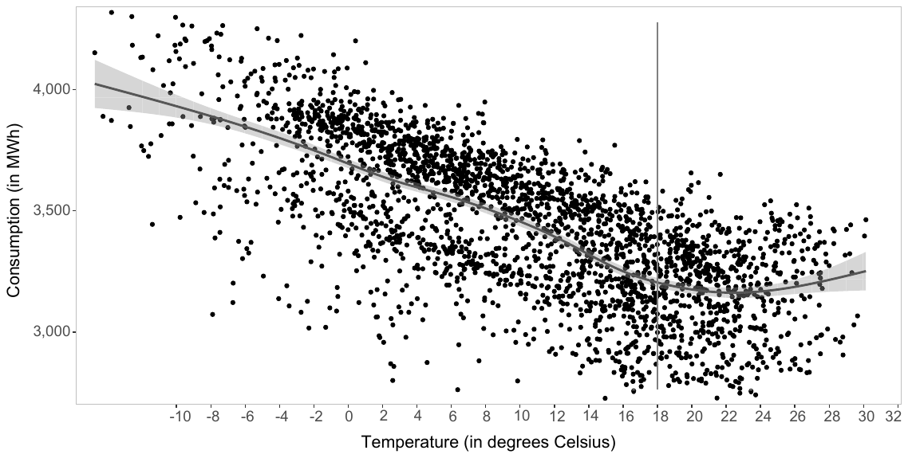
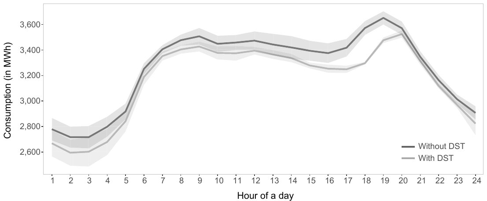
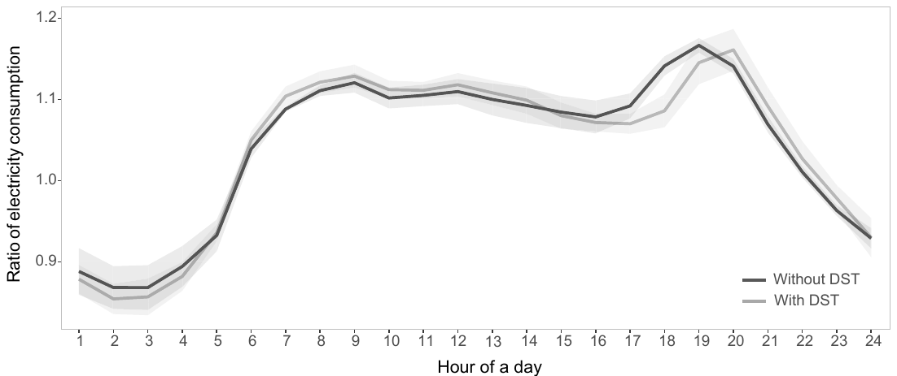
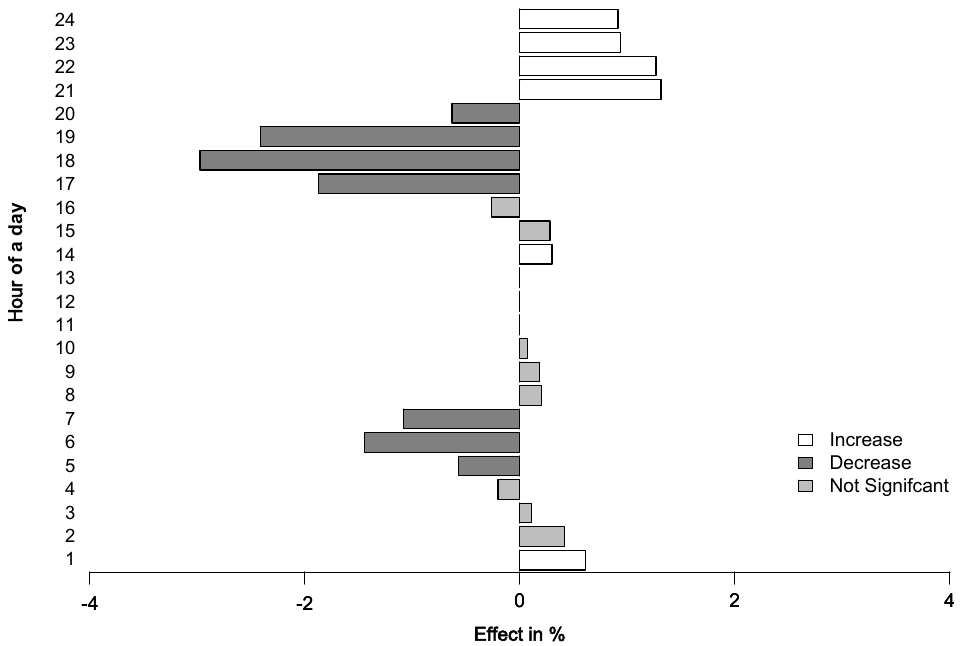

Does daylight saving time save electricity? Evidence from Slovakia
Peter Kudela, Tomas Havranek, Dominik Herman, Zuzana Irsova (2020), "Does daylight saving time save electricity? Evidence from Slovakia." Energy Policy 137: 111146. https://doi.org/10.1016/j.enpol.2019.111146. The corrections the journal made in copy-editing are folded in here, among them the annual savings figure in Section 5.2, and the tables carry the numbering of the version of record. Citation style and footnote numbering follow the accepted manuscript, which is here too; the PDF above is the published article.
Peter Kudela, Tomas Havranek, Dominik Herman, and Zuzana Irsova
Charles University, Prague
November 18, 2019
Abstract
The European Union has recently decided to stop the policy of biannual clock changes in 2021. One reason is that the original rationale for the policy, energy savings, is not supported by a large portion of recent empirical studies. Whether the new permanent time will be standard time or the former daylight saving time has not been decided. Evidence on energy savings from daylight saving time is country-specific, and each country may choose its own time. We examine the effects of the policy in a country for which no studies on daylight saving exist, Slovakia. Using hourly data from the 2010–2017 period, we apply a difference-in-differences approach and estimate energy savings to equal 1% of annual electricity consumption. Alternatively, extrapolating the effect from the results of a previous meta-analysis on different countries, for Slovakia we obtain a smaller estimate, unlikely to exceed 0.5%. Moreover, our findings suggest that daylight saving time smooths the electricity demand curve.
Keywords: Daylight saving time, electricity consumption, energy savings, peak demand, Slovakia
JEL Codes: C54, Q41, Q48
∗Corresponding author: Zuzana Irsova, zuzana.irsova@ies-prague.org. Herman and Kudela acknowledge support from the Charles University (projects PRIMUS/17/HUM/16 and UNCE/HUM/035); Havranek and Irsova acknowledge support from the Czech Science Foundation (project 19-26812X).
1. Introduction
Daylight saving time (DST) refers to the practice of setting clocks one hour forward in the spring and back again in the fall. Historically, the main reason for doing so has been to synchronize human activity with natural daylight at the peak hours of energy consumption. As of today, all member states of the European Union shift their clocks twice a year; although recently, the European Parliament endorsed a proposal to stop the seasonal clock changes starting in 2021 (EC, 2019).
The decision on the resulting permanent time will, however, be made individually by each EU member, and some studies (such as Havranek et al., 2018a) indicate that the impact of DST is likely to be country-specific: some EU countries benefit from DST, whereas others consume more electricity because of the policy. Bergland & Mirza (2017) provide insight into the effects of DST in EU member states and show that the effects do indeed differ by state. Recent evidence from other continents indicates energy costs due to the policy (Kellogg & Wolff, 2008; Kotchen & Grant, 2011). In this paper, we provide the first detailed analysis of the effect of DST in Slovakia, an EU member state with one of the lowest carbon intensities in electricity production.
A common problem with studies that focus on DST in EU countries is the lack of natural experiment data. Part of our estimation strategy is based on a difference-in-differences model that exploits the fact that DST does not affect electricity demand during the midday hours (Ebersole et al., 1975). We extend the model of Bergland & Mirza (2017) and analyze the overall and hourly effects, accounting for different sets of control groups, various weather conditions, temperature specifications, macroeconomic indicators, cyclicities, and seasonalities. The second part of our analysis uses the results of a meta-analysis by Havranek et al. (2018a), who construct a synthetic best-practice study to estimate the overall DST effect. We extrapolate their Bayesian model averaging benchmark results and the preferred design of the best-practice study on the Slovak electricity market.
Our results show that the DST policy in Slovakia conserves some electricity. While the difference-in-differences method shows an effect of approximately 1% on yearly electricity consumption, the best-practice specification extrapolated from the meta-analysis pushes the estimate downwards and suggests the overall effect is unlikely to exceed 0.5%. Importantly, the
DST policy lowers the peak consumption during the early morning and early evening hours while slightly increasing consumption before midnight, thus redistributing electricity consumption more evenly during the day.
The rest of this paper is structured as follows: Section 2 mentions some studies estimating the DST effect in Europe and introduces the Slovak electricity market in relation to DST policy, Section 3 describes the data and methodology used to evaluate different effects, Section 5 discusses the results of the analyses, and Section 6 concludes.
2. Related Literature and Electricity Market in Slovakia
The estimates of energy savings from DST focusing on European markets are scarce and somewhat contradictory. Many come from reports of government or electricity companies rather than academic peer-reviewed articles. HMSO (1970), Hillman (1993), and Hill et al. (2010) report the savings for the United Kingdom; Wanko & Ingeborg (1983) and EVA (1978) report the savings for Austria; Danish Government Report (1974) and ELTRA (1984) for Denmark; Bouillon (1983), Ebersbach & Schaefer (1980), and Fischer (2000) for Germany (these estimates are contradictory to later studies, such as TAB, 2016, showing some costs from DST in Germany); EnergieNed (1995) and SEP (1995) provide the estimates for Netherlands, Bellere (1996), ENEL (1999), and Terna (2016) for Italy; Mirza & Bergland (2011) for Norway and Sweden; ADEME (1995) and ADEME (2010) for France; and finally Castoralova (2019), who to some extent contradicts the findings of Kozuskova (2011), for the Czech Republic electricity market. Negative savings (i.e., costs) of the DST policy are not unheard of, especially for the US (Kotchen & Grant, 2011) and Australian markets (Kellogg & Wolff, 2008).
Only one known estimate of the electricity savings from DST in Slovakia exists: the cross-country study of Bergland & Mirza (2017), who evaluate the savings because of DST at 1% of power consumption (and provide estimates for many countries, without focusing on Slovakia). The estimates of the effect of DST for the structurally most similar economy to Slovakia would be those of the Czech Republic, the average of which is close to 0% in terms of overall electricity consumption (Kozuskova, 2011; Castoralova, 2019; Havranek et al., 2018a; Bergland & Mirza, 2017; Jilek, 2000). Havranek et al. (2018a) and Bergland & Mirza (2017) find large country heterogeneity in the literature on DST effects on energy savings. They also reveal the estimates
to be strongly dependent on latitude. Moreover, the patterns of national demand for electricity change over time as new technologies penetrate European markets (Bossmann & Staffell, 2015). Electronic home appliances with stand-by modes, energy-efficient light bulbs, the transition to electric heating systems, increasing occurrence of air-conditioning, smart-homes, and even electronic cars are changing the national load curves.1 The discussions of DST in the EU is even more problematic since, legally, the EU regulatory bodies cannot oblige a member state to select a dedicated time zone.
In recent years, following increasing economic growth and standards of living after entering the European Union, Slovakia recorded an increase in the demand for electricity—the net consumption was over 30 TWh in 2018 (Table 1). Overall energy consumption has also increased; thus, any tool for energy conservation and greenhouse gas emissions reduction is relevant. The electricity mix, however, is focused on indigenous energy sources and low-carbon technologies, such as nuclear energy (54% of the electricity generated in 2017) and renewable sources (26% of the electricity generated in 2017, of which 17% is hydro power), with the remaining 20% of energy obtained from fossil fuels (SEPS, 2017). Since 2005, the Slovak electricity market has undergone full liberalization. In 2009, Slovakia joined a market coupling project with the Czech Republic: Hungary and Romania later joined in 2012 and 2014, respectively. Market coupling resulted in more efficient utilization of cross-border capacities, which currently amount to a respectable 40% of the generating capacity (IEA, 2018b). Table 1 shows that the electricity production deficit in Slovakia is being covered from imported volumes. Net imports, however, do not generally cover supply limitations but rather regional business opportunities (IEA, 2018b). The upcoming finalization of two units of the nuclear plant Mochovce will cover approximately 26% of the Slovak national electricity consumption (and will reduce the high carbon-intense production from coal and imports), amounting to approximately 7 billion tons of CO2 emissions (Janda, 2018).
Liberalization of the market made wholesale and retail open for competition. Retail prices, however, are regulated by a price cap for all households and small enterprises. Household consumption has increased over time at a pace similar to that of overall consumption: the share of households has remained steady at 20% of overall consumption. Still, it is safe to assume that the price cap discourages, to some extent, energy-efficient behavior. Moreover, market coupling is responsible for the decrease in price volatility (Janda, 2018), even though IEA (2018b) reports Slovakia to have comparatively higher electricity prices than neighboring countries, especially in the industrial sector. IEA (2018b) suggests a number of policy improvements to increase efficiency in energy consumption and to support competition in the market. This becomes highly relevant given the dominant trend of increasing electricity consumption in Slovakia, which according to the prognosis of SEPS (2018), has an average year-on-year growth of 1.3%, for an estimated consumption of 33.8 TWh in 2025.
| 2010 | 2011 | 2012 | 2013 | 2014 | 2015 | 2016 | 2017 | |
|---|---|---|---|---|---|---|---|---|
| Production | 27.7 | 28.1 | 28.4 | 28.6 | 27.3 | 27.2 | 27.5 | 28.0 |
| Export | 6.3 | 10.5 | 13.1 | 10.6 | 11.9 | 12.6 | 10.6 | 12.5 |
| Import | 6.7 | 10.9 | 13.4 | 10.7 | 12.9 | 15.0 | 13.2 | 15.6 |
| Consumption | 28.8 | 28.9 | 28.8 | 28.7 | 28.4 | 29.5 | 30.1 | 31.1 |
| Consumption by: | ||||||||
| Industry [%] | 45 | 45 | 50 | 47 | 51 | 44 | 48 | 48 |
| Agriculture, commerce, services [%] | 34 | 34 | 28 | 31 | 27 | 35 | 29 | 31 |
| Households [%] | 18 | 18 | 20 | 20 | 20 | 19 | 20 | 19 |
| Transportation [%] | 2 | 2 | 2 | 2 | 2 | 2 | 2 | 2 |
Notes: Numbers in TWh taken from SEPS (2019). Sectoral distribution of consumption in percentages (in italics) taken from SOSR (2019).
3. Data
The literature recognizes two different approaches to estimate the savings from DST: simulation and regression. In simulation studies, authors (such as Fong et al., 2007; Pout, 2006; Shimoda et al., 2007) usually develop an energy consumption model of different types of buildings, such as households, industrial, and commercial buildings, and extrapolate the model to the country level. The difference-in-differences regression method, on the other hand, is widely applied for assessing the impact of certain policies (see, for example Choi et al., 2017; Verdejo et al., 2016). The idea is a comparison between the control group of data before the policy change and the treatment group of data after the policy change. In case of Slovak electricity market, both approaches face the problem of data availability. The only public source of electricity consumption data, ENTSO-E (2017), provides hourly load curves since January 2005. Given
that the last DST policy change in Slovakia occurred in 1996, we have no obvious control group for the estimation. Ebersole et al. (1975), however, propose a compelling technique to address this issue: they divide the 24 hours of the day into those affected by DST policy (treatment group) and those unaffected by DST policy (control group). We will follow this approach in the footsteps of Kotchen & Grant (2011) and Mirza & Bergland (2011).
Several factors could systematically influence the consumption patterns in our data and need to be controlled for. The most pronounced controls are weather and light conditions, seasonality, holidays, heterogeneity among consumption units, and related macroeconomic conditions. We obtained the weather data from the Slovak Hydro-Meteorological Institute for four representative meteorological stations: Bratislava airport (western Slovakia), Sliac (central Slovakia), Kamenica nad Cirochou (eastern Slovakia), and Poprad (representative of the cooler northern mountain climate). Given that our consumption data are a country aggregation, we construct a weighted average for all weather variables, where the weights are represented by time-respective regional industry consumption (annual industrial data taken from SOSR, 2019).2 Slovakia lies between the temperate and continental climate zones and has relatively warm summers (reaching 35 degrees Celsius in extreme conditions according to SHMU, 2019) and relatively cold winters (reaching -15 degrees Celsius in extreme conditions), making Slovak electricity consumption likely to be strongly related to heating and cooling.
Research, such as that by Choi et al. (2017), Hill et al. (2010), and Rock (1997), has shown that the relationship between temperature and electricity consumption is not necessarily linear but either U-shaped or V-shaped. Plotting the relationship of consumption and temperature in Figure 1 for the twelfth hour in the middle of the day, the data appear to follow a U-shaped relationship. Therefore, we create another variable to capture this nonlinearity, a quadratic form of temperature (Temperature squared ). Following Choi et al. (2017), Kotchen & Grant (2011), and Kellogg & Wolff (2008), we also capture the relationship between electricity consumption and temperature with the variables Cooling degrees, defined as , and Heating degrees, defined as . Here, 18°C is the base temperature that also represents the average turning point where Slovak consumption stops to decrease

Notes: Figure is a scatter plot of electricity consumption and average temperature at 12 AM. The vertical line represents 18 degrees Celsius, the base temperature for the calculation of heating and cooling degrees (see Table 2)—although for this hour of the day, the base temperature is actually approximately 22 degrees Celsius.
and starts to increase with an increasing temperature. This inflection point appears in Figure 1 between 21◦C and 22◦C at noon but varies from 15◦C around midnight to 22◦C in the afternoon hours.
Electricity Price is not a common variable in the regression for DST effects as it introduces endogeneity and is believed not to influence the estimated effect of DST savings. We think, however, that a good representation of the electricity price could help to filter out the residual variations in demand; thus, we follow Mirza & Bergland (2011) in this regard. We could not obtain a suitable instrument, but given that the incremental endogeneity should not decrease the validity of the estimated DST effect and given that the price elasticity of electricity demand in Slovakia is rather small (Bildirici & Kayikci, 2016), we use the hourly short-term market price from OKTE (2017). Moreover, given that retail prices in Slovakia are regulated, this price should not substantially affect the end-consumer behavior. In addition, to account for external macroeconomic conditions, we include the variable Oil price, which represents the daily (weekdays only) Brent oil spot prices collected from FRED (2017).
The last group of variables in the analysis is used to account for cyclicity, seasonality, and other time-related systematic patterns of electricity consumption. The electricity demand in our sample, irrespective of the DST policy, increases from year to year, varies from month to month (decreasing in summer regardless of DST policy), jumps on non-working days and shows hourly patterns. We also include Cyclicity, a trigonometric sine function, to account for residual cyclical annual patterns in consumption (Mirza & Bergland, 2011). Furthermore, the variable Holidays represents a dummy variable with daily granularity for all public holidays in Slovakia, when there is a different pattern of consumption compared to working days. Weekend represents a dummy variable for weekends to distinguish between weekend and weekday patterns of consumption, and the Seasonality matrix includes dummy variables for hours, months, seasons, and years to account for several potential forms of seasonality and periodic patterns. Note that we include monthly variables as well as the variable Summer representing the months of June, July, and August. Slovakia tends to have much lower consumption of electricity in the summer months, according to SEPS (2019) by about 20% or more. The geography and climate of Slovakia ensures there is no need for heating during the summer, schools and school facilities are closed, and people are often abroad for vacation. Even the gradual increase in the usage of air-conditioning units, refrigeration equipment, and pool pumps during the summer months still does not compensate for the large differences in consumption throughout the year (SEPS, 2019).
| Variable | Description | Mean | SD | Min | Max |
|---|---|---|---|---|---|
| Consumption | = hourly aggregate electricity consumption [in MW] | 3,207.9 | 426.7 | 2,119.0 | 4,541.0 |
| Weather variables | |||||
| Humidity | = average hourly relative air humidity [in %] | 73.8 | 16.8 | 18.7 | 98.7 |
| Air pressure | = average hourly air pressure [in hPa] | 982.8 | 13.0 | 828.3 | 1,007.5 |
| Sunlight | = total duration of sunshine in an hour [in minutes] | 9.9 | 15.1 | 0.0 | 60.0 |
| Precipitation | = sum of hourly rainfall [in mm] | 0.1 | 0.3 | 0.0 | 13.3 |
| Radiation | = average hourly intensity of radiation [in J/cm2] | 36.5 | 51.4 | 0.0 | 328.4 |
| Temperature variables | |||||
| Temperature | = average hourly air temperature [in °C] | 10.2 | 9.2 | -19.7 | 36.8 |
| Cooling degrees | = hourly amount of cooling degrees [in °C] | 1.0 | 2.6 | 0.0 | 18.8 |
| Heating degrees | = hourly amount of heating degrees [in °C] | 8.8 | 7.8 | 0.0 | 37.7 |
| Price variables | |||||
| Electricity price | = average hourly price in a daily market [in EUR per MWh] | 39.1 | 17.0 | -150.0 | 200.0 |
| Oil price | = Brent daily crude oil spot price [in USD per barrel] | 83.9 | 29.0 | 26.0 | 128.1 |
Notes: SD = standard deviation. Data set is based on the period between April 2010 and July 2017. Weather variables were constructed as consumption-weighted averages from the selected areas: Bratislava, Sliac, Kamenica nad Cirochou, and Poprad.
Table 2 provides the descriptive statistics for the final set of data used in this analysis: electricity Consumption with hourly granularity, the hourly amount of Cooling degrees and
Heating degrees, macro variables such as Electricity price and Oil Price, and hourly data on weather conditions such as Humidity, Air Pressure, Sunlight, Precipitation, sun Radiation, and Temperature. With regard to the data availability of other explanatory variables, we obtain hourly aggregate electricity Consumption for Slovakia for the period between April 1st, 2010, and July 31th, 2017 (downloaded from ENTSO-E, 2017). Data are collected in Central European Time, which means the last Sunday in March has 23 hours and the last Sunday in October has 25 hours. The time zone is important in order to match local temperature and pricing with the time stamp used in the ENTSO-E database.
4. Research Design
Given the availability of data and variables described in Section 3, our central approach to estimate the DST effect is the difference-in-differences technique. The first step is to identify the control group in a data set without the change in the DST policy. Mirza & Bergland (2011) and Kotchen & Grant (2011) dealt with the problem in the following way: they pronounced the midday hours from 12 AM to 2 PM and the midnight hours from 12 PM to 2 AM to be unaffected by the policy, thus the control group, because these hours have practically the same amount of natural daylight regardless of the DST policy. The authors considered the remaining hours to be affected by the policy and set them to serve as the treatment group. We will apply similar techniques in this study.
Before presenting the formal tests for validity of the control hours, we follow Belzer et al. (2008) and provide the visualization of changes in hourly patterns in consumption before and after the time shift. We compute the average consumption for each hour of the day for two different samples: consumption five days prior to the time shift and consumption five days after the time shift, both in March 2014 (since it is a data sample with no holidays around the time shift). Figure 2 presents the variation in consumption throughout the hours of the day with two peaks, one in the morning hours and one in the evening hours. The morning peak remains approximately the same for both data samples at 9 AM, while the evening peak shifts after the DST transition from 7 PM to 8 PM.
This result is in line with intuition: because people wake up with an alarm clock at the same time and have the same morning routine, the morning peak occurs at approximately the same
time, regardless of the DST policy. By contrast, the shift in the evening hours corresponds to the logic that adding additional hour of natural light shifts evening consumption by an hour. The direction of the consumption change in Figure 2 suggests a decrease in consumption after the time shift. Moreover, the difference in consumption after the time shift is smaller in the morning and in the late evening hours and the largest in the early evening hours. A similar pattern is observed for other investigated years (except those where the analyzed sample includes holidays). During the Autumn time shift, the opposite pattern is observed.
Even more revealing is Figure 3, which visualizes the pattern of electricity consumption by means of the ratio of hourly electricity consumption to the average consumption during the control hours of 12 AM to 2 PM and 12 PM to 2 AM (here, we follow Mirza & Bergland, 2011). One clear pattern is the increased morning consumption after the shift to DST, possibly because throughout the darker mornings after the shift, people still need artificial light and heating (Kotchen & Grant, 2011; Momani et al., 2009). On the other hand, the decrease in consumption during the early evening hours is followed by an increase later in the evening (consistent with the findings of, for example, Karasu, 2010).
Figure 3 also shows a small increase in consumption during midday hours. During the midnight hours and early morning hours, however, a decrease in consumption is observed, which indicates that using midnight hours as a control group might underestimate the DST effect, whereas using midday hours might overestimate the effect. Conclusions drawn solely from Figure 2 and Figure 3, however, might be misleading because these figures do not account for other important factors that could influence consumption patterns. We test for the validity of the hours more formally, by constructing 24 regressions (one regression for every hour) in the form of
to estimate the coefficient of the variable. is a dummy variable equal to 1 when the DST policy is applied in day . The group of Temperature variables represents either the pair of variables Temperature and Temperature squared or the pair of variables Cooling

Notes: The lighter line represents the average consumption during the five days following the transition in March 2014. The darker line represents the average consumption during the five days prior to the transition in March 2014. Shaded areas represent the 95% confidence intervals.

Notes: The lighter line represents the ratio of hourly consumption to the mean consumption during the control hours averaged throughout the five days following the transition in March 2014. The darker line presents the same ratio based on the data of five days after the transition in March 2014. We consider the control group of midday hours (from 12 AM to 2 PM) and midnight hours (from 12 PM to 2 AM). Shaded areas represent 95% confidence intervals.
degrees and Heating degrees. The group of Weather variables represents Humidity, Air Pressure, Sunlight, Precipitation, and Radiation. The rest of the variables follows the definition in Table 2. Table 7 provides an overview for hours where the coefficient of DST was statistically insignificant, including those hours that we originally considered for a control group. The results suggest that in our data sample, DST does not affect consumption during the hours of 11 AM to 1 PM, and we use these hours as the control group in our benchmark model specification (but provide several robustness checks utilizing common practice in the literature set by Kotchen & Grant, 2011):
where is a dummy variable equal 1 when DST policy is active at hour h of day d and is a dummy variable equal 1 if the hour h of day d belongs to the treatment group. The interaction term is the variable of interest that captures the DST policy effect in percentage points for days when the policy is in place. The group of Temperature variables represents either the pair of variables Temperature and Temperature squared or the pair of variables Cooling degrees and Heating degrees. The group of Weather variables represents Humidity, Air Pressure, Sunlight, Precipitation, and Radiation. The group of Price variables represents Electricity price and Oil price. The remaining dummy variables representing weekends, holidays, and hours of the day are used to control for the different time-invariant fixed effects. Cyclical and seasonal patterns are accounted for. The identifying assumption is that once controlling for observables such as weather, fixed effects, and DST observance, the evolution of electricity consumption in the control and treatment groups should be the same and the expected residual in electricity consumption is zero. The coefficient of the interaction variable can thus provide a measure for the estimated change in electricity consumption, looking at the differences between periods before the DST transition and after
the DST transition in the difference of consumption in the DST-affected and DST-non-affected hours, while controlling for other systematic effects on consumption.
We estimate our benchmark (2) model based on the selection of the empirically validated control hours. To provide robustness checks for the benchmark model, we estimate the models for different sets of control groups. Furthermore, we utilize the meta-analysis data set of Havranek et al. (2018a), as well as their Bayesian model averaging results from the meta-regression analysis and their specification of the best-practice study design in the DST literature, to create a synthetic study tailored for Slovakia. Although this estimate is expected to have relatively large confidence intervals, it has significant informational value given the breadth of data included and can provide further support to the validity of our benchmark model results.
Previous research has noted that the DST effect is not constant throughout the day (Mirza & Bergland, 2011; Karasu, 2010; Verdejo et al., 2016). Some studies, such as Kellogg & Wolff (2008), suggest that the evening energy savings might be offset by increased morning consumption. To analyze the effect of DST on peak power demand, the following model is constructed:
where is a dummy variable equal to 1 when DST policy is active at hour h of day d and is a dummy variable equal to 1 if the hour h of day d belongs to the treatment group. is representation of and variables are dummy variables for each hour of the day. The definition of variable follows the same logic and represents the interactions between the temperature and the dummy variables for an hour. The rest of the variables follow (2). To avoid losing too many degrees of freedom, and given that temperature is generally considered to be one of the most important explanatory variables in DST models, we do not
include interactions of hours with explanatory variables other than Temperature. The variables of interest are given by the interaction terms of , which represent the percentage change in electricity consumption for a specific hour of the day due to the DST policy if every other control factor is held constant.
5. Results
5.1. Benchmark Estimation
The first step in our analysis is to assess the validity of the chosen model. Given that our models suffer from both heteroskedasticity and serial correlation, we use standard errors robust to both heteroskedasticity and serial correlation with a lag of 24 (Verbeek, 2008; Mirza & Bergland, 2011). Second, given that the stationarity assumption does not hold for the variable Oil price, we drop the variable to avoid spurious regression. The results of our benchmark model using control hours from 11 AM to 1 PM can be found in Table 3. The estimates of the DST effect (coefficient of the variable DST * Treatment) suggest a decrease in electricity consumption in Slovakia of between 1.3% and 1.6% during the days when DST is applied, depending on how the relationship between temperature and consumption is modeled. In Slovakia, DST applies for 210 days of the year; thus, the yearly DST effect on electricity consumption amounts up to 0.9% (= 1.6% ∗ 210/365) of energy savings as a portion of yearly electricity consumption. These results are fairly consistent with the estimates from Bergland & Mirza (2017), which suggest a reduction in consumption due to DST of approximately 1%. Apart from the effect of the DST policy on consumption, a few other relationships should be discussed. The coefficient of the variable Treatment suggests that during our chosen control hours, consumption is lower, regardless of the DST policy (largely because the peaks in electricity consumption occur in the morning and in the evening).
Deviations from the base temperature (Heating and Cooling degrees) increase consumption, which, as Kellogg & Wolff (2008) state, is consistent with the effects of heating (when the temperature is below 18 degrees Celsius) and air-conditioning (when the temperature is above 18 degrees Celsius). Kotchen & Grant (2011) find the change in consumption greater for cooling than heating in Indiana, which is in contradiction to what we found for the Slovak data set—air-conditioning is less widespread in Slovakia and draws less electricity than heating, which is heavily used during the colder months. Moreover, the corresponding sign of the variables Heating and Cooling degrees suggests a U-shaped relationship between temperature and consumption, corroborating the evidence from the opposite signs of Temperature and Temperature squared. In addition, these results suggest that increasing the base temperature in Slovakia would also increase the savings from the DST policy.
| Variable | Benchmark using Cooling/Heating degrees | Benchmark using Temperature squared |
|---|---|---|
| Constant | 8.180∗∗∗ | 8.227∗∗∗ |
| (0.016) | (0.016) | |
| DST | −0.012∗∗∗ | −0.017∗∗∗ |
| (0.002) | (0.002) | |
| Treatment | −0.133∗∗∗ | −0.134∗∗∗ |
| (0.001) | (0.001) | |
| DST * Treatment | −0.0156∗∗∗ | −0.0127∗∗∗ |
| (0.001) | (0.001) | |
| Temperature variables | ||
| Temperature | −0.005∗∗∗ | |
| (0.0001) | ||
| Temperature squared | 0.0001∗∗∗ | |
| (0.00000) | ||
| Heating degrees | 0.004∗∗∗ | |
| (0.0001) | ||
| Cooling degrees | 0.002∗∗∗ | |
| (0.0001) | ||
| Weather variables | ||
| Humidity | −0.0001∗∗∗ | 0.00003 |
| (0.00002) | (0.00002) | |
| Air pressure | −0.0001∗∗∗ | −0.0001∗∗∗ |
| (0.00001) | (0.00001) | |
| Sunlight | −0.001∗∗∗ | −0.001∗∗∗ |
| (0.00002) | (0.00002) | |
| Precipitation | 0.003∗∗∗ | 0.003∗∗∗ |
| (0.001) | (0.001) | |
| Radiation | 0.00004∗∗∗ | 0.0001∗∗∗ |
| (0.00001) | (0.00001) | |
| Price variable | ||
| Electricity Price | 0.002∗∗∗ | 0.002∗∗∗ |
| (0.00001) | (0.00001) | |
| Cyclicity | −0.00001∗∗∗ | −0.00001∗∗∗ |
| (0.00000) | (0.00000) | |
| Holidays | −0.068∗∗∗ | −0.068∗∗∗ |
| (0.001) | (0.001) | |
| Weekend | −0.077∗∗∗ | −0.077∗∗∗ |
| (0.0004) | (0.0004) | |
| Seasonality | ||
| Summer | −0.006∗∗∗ | −0.008∗∗∗ |
| (0.001) | (0.001) | |
| January | 0.079∗∗∗ | 0.084∗∗∗ |
| (0.002) | (0.002) | |
| February | 0.090∗∗∗ | 0.097∗∗∗ |
| (0.002) | (0.002) | |
| March | 0.073∗∗∗ | 0.082∗∗∗ |
| (0.002) | (0.002) | |
| April | 0.034∗∗∗ | 0.042∗∗∗ |
| (0.001) | (0.001) | |
| May | 0.015∗∗∗ | 0.017∗∗∗ |
| (0.001) | (0.001) | |
| June | 0.017∗∗∗ | 0.017∗∗∗ |
| (0.001) | (0.001) | |
| July | 0.004∗∗∗ | 0.004∗∗∗ |
| (0.001) | (0.001) | |
| September | 0.026∗∗∗ | 0.027∗∗∗ |
| (0.001) | (0.001) | |
| October | 0.052∗∗∗ | 0.060∗∗∗ |
| (0.001) | (0.001) | |
| November | 0.059∗∗∗ | 0.067∗∗∗ |
| (0.002) | (0.002) | |
| December | 0.066∗∗∗ | 0.074∗∗∗ |
| (0.002) | (0.002) | |
| Year 2010 | −0.068∗∗∗ | −0.067∗∗∗ |
| Variable | Benchmark using Cooling/Heating degrees | Benchmark using Temperature squared |
|---|---|---|
| (0.001) | (0.001) | |
| Year 2011 | −0.072∗∗∗ | −0.070∗∗∗ |
| (0.001) | (0.001) | |
| Year 2012 | −0.057∗∗∗ | −0.056∗∗∗ |
| (0.001) | (0.001) | |
| Year 2013 | −0.049∗∗∗ | −0.046∗∗∗ |
| (0.001) | (0.001) | |
| Year 2014 | −0.060∗∗∗ | −0.058∗∗∗ |
| (0.001) | (0.001) | |
| Year 2015 | −0.033∗∗∗ | −0.030∗∗∗ |
| (0.001) | (0.001) | |
| Year 2016 | −0.015∗∗∗ | −0.013∗∗∗ |
| (0.001) | (0.001) | |
| Hour 1 | −0.034∗∗∗ | −0.033∗∗∗ |
| (0.001) | (0.001) | |
| Hour 2 | −0.072∗∗∗ | −0.071∗∗∗ |
| (0.001) | (0.001) | |
| Hour 3 | −0.092∗∗∗ | −0.092∗∗∗ |
| (0.001) | (0.001) | |
| Hour 4 | −0.092∗∗∗ | −0.091∗∗∗ |
| (0.001) | (0.001) | |
| Hour 5 | −0.080∗∗∗ | −0.079∗∗∗ |
| (0.001) | (0.001) | |
| Hour 6 | −0.056∗∗∗ | −0.054∗∗∗ |
| (0.001) | (0.001) | |
| Hour 7 | 0.022∗∗∗ | 0.023∗∗∗ |
| (0.001) | (0.001) | |
| Hour 8 | 0.066∗∗∗ | 0.066∗∗∗ |
| (0.001) | (0.001) | |
| Hour 9 | 0.104∗∗∗ | 0.104∗∗∗ |
| (0.001) | (0.001) | |
| Hour 10 | 0.132∗∗∗ | 0.131∗∗∗ |
| (0.001) | (0.001) | |
| Hour 11 | −0.003∗∗∗ | −0.003∗∗∗ |
| (0.001) | (0.001) | |
| Hour 12 | 0.003∗∗ | 0.003∗∗ |
| (0.001) | (0.001) | |
| Hour 14 | 0.137∗∗∗ | 0.136∗∗∗ |
| (0.001) | (0.001) | |
| Hour 15 | 0.125∗∗∗ | 0.125∗∗∗ |
| (0.001) | (0.001) | |
| Hour 16 | 0.115∗∗∗ | 0.115∗∗∗ |
| (0.001) | (0.001) | |
| Hour 17 | 0.115∗∗∗ | 0.115∗∗∗ |
| (0.001) | (0.001) | |
| Hour 18 | 0.108∗∗∗ | 0.108∗∗∗ |
| (0.001) | (0.001) | |
| Hour 19 | 0.102∗∗∗ | 0.102∗∗∗ |
| (0.001) | (0.001) | |
| Hour 20 | 0.108∗∗∗ | 0.108∗∗∗ |
| (0.001) | (0.001) | |
| Hour 21 | 0.110∗∗∗ | 0.110∗∗∗ |
| (0.001) | (0.001) | |
| Hour 22 | 0.080∗∗∗ | 0.080∗∗∗ |
| (0.001) | (0.001) | |
| Hour 23 | 0.037∗∗∗ | 0.037∗∗∗ |
| (0.001) | (0.001) | |
| Observations | 63,427 | 63,427 |
| R2 | 0.902 | 0.902 |
| Adjusted R2 | 0.902 | 0.902 |
| Residual Std. Error (df = 63,371) | 0.042 | 0.042 |
| F Statistic (df = 55; 63,371) | 10,607∗∗∗ | 10,583∗∗∗ |
Notes: The table presents the results of difference-in-differences regression of (2). HAC-robust standard errors in parentheses. *p<0.1; **p<0.05; ***p<0.01.
The variables capturing general weather conditions (including temperature) are mostly statistically significant, and the direction of the estimated weather effects remains in line with intuition. An increase in the length of daylight in a single hour decreases electricity consumption, which is reflected in the negative coefficient of Sunlight, a result compatible with many studies, including Kellogg & Wolff (2008), Hancevic & Margulis (2016), and Choi et al. (2017). We report a similar trend for Air Pressure, corroborating the results of Hancevic & Margulis (2016), who also find a significantly negative but rather small effect on electricity consumption. Humidity does not play a crucial role in explaining energy consumption in Slovakia or has a rather negative effect, which could be due to the fact that higher air humidity in Slovakia is also associated with lower temperatures (an argument already used by Choi et al., 2017). The remaining weather variables, Precipitation and Radiation, appear to have a positive effect on consumption—increasing precipitation could bring colder temperatures and therefore increase the necessity of heating. The intensity of sunshine is also at its highest in more extreme temperatures, corroborating the story of a positive effect on consumption, as well as a U-shaped relationship between temperature and consumption. Other important effects are related to Seasonality and non-working days.
Electricity consumption on Holidays and Weekends is lower, consistent with the findings of Kellogg & Wolff (2007) and Kandel (2007). It follows that during non-working days, people sleep longer, and the morning increase in demand is mitigated by fewer morning activities. We also find that electricity consumption is reduced during the summer (the coefficient for Summer is negative), and the DST policy is believed to play a role here: in the morning, the sun rises early enough for people to wake up in natural daylight, while in the evening, an extra hour of sunlight is provided. As soon as there are no early morning benefits, as happens when DST is prolonged to early spring or later autumn months, the argument looses its power (Kellogg &
Wolff, 2008). Similar reasoning applies to the coefficient of DST, which is active mostly during the summer: the coefficient represents the percentage difference in electricity consumption between the period of active and non-active DST policy use. The coefficient Electricity Price suggests positive partial correlation with consumption. However, it is most likely the result of endogeneity as the price is set to be highest during the peak of electricity consumption. The variable could also be capturing seasonality or trend over and beyond other variables in the model due to possibly lower short-term demand flexibility of our data. To check whether our reliance on selected explanatory variables drives our conclusions, we calculate several robustness checks adapting the benchmark model to different assumptions about the best model design.
5.2. Robustness Checks
To validate the conclusions discussed in the previous subsection, we provide five more specifications addressing the impact of different structural changes to the baseline models captured by Table 3. The model adjustment concerns three major issues: the alternative definition of Heating degrees and Cooling degrees, the alternative definition of Seasonality and Cyclicity, and the usage of the Electricity price variable inside the model. Given that cooling and heating were repeatedly shown to change non-linearly with temperature (Bushnell & Mansur, 2005; Kellogg & Wolff, 2008), we construct a specification employing the squared variables of Heating degrees and Cooling degrees. The first model of Table 8 captures the adjustment resulting in a lower DST estimate of 1.4% of savings when DST is applied (i.e., 0.8% annually). Although some empirical evidence suggests that the non-linear pattern is less pronounced in colder countries such as Slovakia (see, for example, Bessec & Fouquau, 2008), it perseveres in our sample and is robustly significant for the cooling efforts related to electricity consumption.
Second, it can be the case that for some temperature interval neither heating nor cooling is necessary. In that case, the base temperature of 18°C would be different for both cooling and heating efforts. For the second specification of Table 8, we redefine Cooling degrees as , and Heating degrees as . The choice of the interval 15, 21 of no electricity utilization for heating/cooling follows the temperature extremes of the indicative heating and cooling season in Slovakia (Lieskovsky et al., 2019, provide monthly ranges for the seasons’ duration). The range also roughly corresponds to the inflection
points on the consumption-temperature curve throughout the day in our data set (displayed at noon in Figure 1). The resulting DST effect decreases to 1.4% in days when DST is applied again, and the additional assumption of non-linearity in the heating/cooling efforts (not reported in Table 8) in this case does not change the economic or statistical significance of the estimated DST effect.
Our representation of the seasonal or cyclical annual patterns includes months, summer, and a simple sinusoidal function capturing a possible residue in the annual pattern. A cyclical component of the electricity consumption may be, however, extracted from the data by a straightforward application of both the sine and cosine functions. Such application is often considered parsimonious relative to the use of many monthly dummies (Bergland & Mirza, 2017), it can better locate the consumption peaks, and increases the number of degrees of freedom compared to our baseline estimation. The third and fourth specification of Table 8 show the sensitivity of our baseline models when seasonalities and cyclicalities shaping the annual patterns are defined solely by trigonometric functions. In this case the DST effect rises to 1.9% of savings from the policy when DST is applied (i.e., to 1.1% of annual electricity consumption).
We do not have any strong instrument at disposal to account for the endogeneity the Electricity price variable most probably brings to our estimation. The price variable is likely associated with seasonality (high consumption periods are associated with high prices). Therefore, we analyze the sensitivity of our estimated DST effect to an estimate stemming from a model without Electricity price.3 Discarding the variable from our baseline does not change the value of the DST effect (thus is not reported in Table 8). Our final specification in Model 5 of Table 8, however, shows what happens when all possible changes to the baseline are applied cumulatively: the model ignores Electricity price, uses redefined Heating degrees and Cooling degrees with their squared values, and employs trigonometric functions instead of Seasonality dummies. The resulting DST effect amounts to 2% of savings when DST is applied, equivalent to 1.2% of annual savings on total electricity consumption—very close to our baseline estimate of 1% with a similar and small standard error.
Previous studies using the “equivalent day normalization technique” on electricity consumption used the same set of control hours that, by common sense, should be unaffected by the DST policy. As a final robustness check, we show in Table 4 how the different sets of control hours and different approaches to capturing the effects of temperature could affect the estimated savings using our baseline set of models. We estimate the benchmark models for 1) group of control hours from 12 AM to 2 PM, 2) group of control hours from 12 PM to 2 AM, and 3) group of standard control hours from 12 PM to 2 AM and from 12 AM to 2 PM. It can be observed that using the midday hours as the control group slightly overestimates the reduction in consumption. On the other hand, if midnight hours serve as the control group, the results are underestimated. The standard set of control hours results in an estimate of 1.3% savings (0.8% annually). Considering all of our estimated models and their robustness checks, the annual estimate of DST savings on electricity consumption ranges between 0.8% and 1.2%. As Havranek et al. (2018a) show in a large meta-analysis, the estimated DST effect is sensitive to study design, model specification, and estimation method.
| Benchmark using Cooling/Heating degrees | Benchmark using Temperature squared | |
|---|---|---|
| Benchmark group (hours 11, 12, 13) | -0.0156 | -0.0127 |
| Control group 1 (hours 12, 13, 14) | -0.0165 | -0.0137 |
| Control group 2 (hours 24, 1, 2) | -0.0066 | -0.0080 |
| Control groups 1 & 2 | -0.0126 | -0.0118 |
Notes: This table summarizes the overall DST effect estimates using different control hour groups and temperature specifications. The “Benchmark group (hours 11, 12, 13)” is identical to the coefficients of variable DST*Treatment reported in Table 3. Negative coefficients represent energy consumption savings as a result of the DST policy. All reported coefficients are statistically significant at the 1% level.
5.3. Meta-Analysis Estimate
To confront the empirical estimates of Tables 4 and 8 with broader evidence based on international data, we employ the study of Havranek et al. (2018a) and replicate their best-practice approach to estimate the DST effect based on the literature covering the last 40 years of research. The data set in Havranek et al. (2018a) codes 162 independent estimates of the DST effect from various studies, their statistical measures of precision, and different aspects of study design, including method and publication characteristics. To show a systematic dependence between the DST effects and study design, the authors use state-of-the-art techniques to estimate the meta-regression, taking into account the publication bias often present in the economic literature (Havranek & Irsova, 2010; Babecky & Havranek, 2014; Havranek & Irsova,
2017; Havranek et al., 2018b,c). We take the results of this estimation (posterior means from the Bayesian Model Averaging model of Havranek et al., 2018a, from Table 5 on p. 49) and the best-practice specification of Havranek et al. (2018a) to remain consistent with their estimates.
The best-practice approach, according to Havranek et al. (2018a), is based on the difference-in-differences method covering large data sets and the latest highly cited studies published in the best journals. Furthermore, this approach considers latitudinal effects to account for geographical variation among the countries. To compare the results of this exercise with those of Bergland & Mirza (2017), we construct the synthetic estimates for Slovakia and the European average. The results can be found in Table 5: the Slovak estimate of −0.084% is the share of total electricity consumption on days when DST is applied. The yearly DST effect on electricity consumption amounts to −0.084%∗210/365, which is hardly 0.05% of energy savings in terms of yearly electricity consumption. More importantly, the possible savings from DST are unlikely to exceed −0.846% ∗ 210/365, amounting to approximately 0.5% of yearly electricity consumption. This best-practice estimate is even smaller than what we (in Table 4) or Bergland & Mirza (2017) found. Nevertheless, some researchers (such as Hancevic & Margulis, 2016) argue that the efficiency of power supply meeting demand should be investigated on an hourly basis.
5.4. Hourly Effects
Several studies (Kellogg & Wolff, 2008; Kotchen & Grant, 2011; Bergland & Mirza, 2017) discuss the effects of DST policy on peak demand and the commonly occurring hourly trade-offs between the positive and negative consumption changes due to DST policy throughout the day. Choi et al. (2017) and Kellogg & Wolff (2008) find that the evening savings are offset by the morning increase in consumption, leading to an overall non-significant effect. Kotchen & Grant (2011) show that the increase in morning consumption exceeds any savings and that the overall DST effect is an increase in consumption. The policy impact becomes especially important when no production capacity is available to meet the increased peak demand. Given that Slovakia has large generating capacity, the policy effects should not create additional installation expenses but could result in lower generation costs. Figure 3 indicates a reduction in peak electricity consumption during the morning and evening hours after the policy change but also an increase in electricity consumption during the rest of the day.
| Mean | 95% conf. int. | ||
|---|---|---|---|
| Slovakia | -0.00084 | -0.00846 | 0.00677 |
| European Union | -0.00083 | -0.00845 | 0.00679 |
Notes: The table presents the mean estimates of the DST effect implied by Bayesian model averaging and the best practice defined by Havranek et al. (2018a). Negative estimates represent savings because of the DST policy. The estimate for Europe is a consumption-weighted average of individual countries’ savings. The confidence intervals are approximate and constructed using the standard errors estimated by OLS.

Notes: The figure shows the distribution of the DST effect on electricity consumption throughout the day.
The estimation of (3) in Table 9 corresponds to such policy impacts: the largest energy savings occur during evening peak hours from 5PM to 8PM and range from 0.6% to almost 3% of hourly consumption. Another peak occurs in the morning from 5AM to 7AM and ranges between 0.5% and 1.5% savings. Similar patterns are observed in previous studies; see, for example, Mirza & Bergland (2011) and Verdejo et al. (2016). On the other hand, an increase in electricity demand occurs at night between 9PM and 12PM, and the cost reaches 1.3% of electricity consumption. The early morning hours bring small changes in the magnitude of the effect and are statistically insignificant. The summary of the DST impact of individual hours can be found in Figure 4.
| Year | Reduction [GWh] | Price [EUR/MWh] | Financial Benefits [million EUR] |
|---|---|---|---|
| 2010 | 115 - 211 | 15.23 | 1.7 - 3.2 |
| 2011 | 132 - 243 | 16.43 | 2.2 - 4.0 |
| 2012 | 132 - 243 | 16.66 | 2.2 - 4.0 |
| 2013 | 128 - 237 | 16.63 | 2.1 - 3.9 |
| 2014 | 127 - 234 | 13.84 | 1.8 - 3.2 |
| 2015 | 130 - 240 | 13.97 | 1.8 - 3.4 |
| 2016 | 137 - 253 | 14.21 | 1.9 - 3.6 |
Notes: The table presents a valuation for the DST estimate of our benchmark model in Table 3, 1.56%, and the synthetic best-practice estimate implied by Havranek et al. (2018a), 0.85%. Volumes retrieved from ENTSO-E (2017), price data retrieved from Eurostat (2019).
Our preferred estimate from the difference-in-difference analysis indicates that the DST effect on electricity consumption in Slovakia reaches 1.6% (Table 3), while the synthetic estimate based on the study of Havranek et al. (2018a) indicates an effect of no more than 0.9% for the period when the DST policy is active (corresponding to the range between 0.5% and 1% of annual savings). In Table 6, we estimate the welfare effect stemming from decreased consumption due to DST based on these two estimates. We use ENTSO-E (2017) data to estimate the portion of electricity consumption saved and the yearly residential electricity prices (retrieved from Eurostat, 2019) for the period of 2010–2016. Although the assumption that the energy savings are created only for households is strong, we want to show the maximum possible savings. This price includes the production costs of electricity, network costs, taxes and levies. The valuation of Table 6 shows savings between 120 GWh and 250 GWh, which translates between EUR 2M and EUR 4M of financial benefit. Since a common Slovak household annually consumes approximately 20 MWh (SPP, 2017), the energy savings could be compared to the total energy consumption of 6,000 to 13,000 households per year.
6. Conclusion and policy implications
The daylight saving time policy in Europe was originally introduced for the purpose of energy savings. Recent academic evidence, such as Hill et al. (2010), Bergland & Mirza (2017), and Havranek et al. (2018a), suggests the unified policy across the European Union has different impacts on the electricity consumption of its member states. This paper provides the first comprehensive analysis of the DST effects on electricity consumption in Slovakia. Using 2010–2017
hourly electricity load data and accounting for different weather conditions, macro variables, annual cycle and seasonality, we show that the policy does affect electricity consumption in Slovakia to some extent. The magnitude of this effect indicated by the difference-in-differences analysis using a proxy control group appears to be relatively high, around 1% of yearly electricity consumption. The magnitude decreases, however, to a level close to zero when we built a synthetic best-practice estimate from a meta-analysis (applying Havranek et al., 2018a, methodology); the best-practice also suggests that the estimate is unlikely to exceed 0.5% of yearly electricity consumption.
We also observe that the DST effect varies throughout the day. The decrease in demand for electricity due to the policy occurs mostly during the early morning hours and early evening hours, amounting to, during some hours, almost 3% of electricity consumption when the policy is applied. The forenoon hours tend to be impacted the least, while the largest costs due to the policy are observed before midnight, reaching 1.6% of consumption when the policy is applied. The DST policy decreases peak consumption during the early morning and early evening hours and does not present any additional constraint on generating capacity. An important positive effect of the policy is thus redistributing consumption more evenly during the day. The overall annual effect of 0.5%–1% of savings on electricity consumption corresponds to the total annual energy consumption of approximately 6,000 to 13,000 Slovak households. The direct benefits of the DST policy thus bring significant economic savings of about 2 to 4mEUR annually (based on the 2016 energy savings from DST of about 140GWh).
Often excluded from the analysis of DST are indirect benefits of the policy. Such an indirect benefit comes in the form of carbon abatement and can be calculated using the concept of the social cost of carbon. Social cost of carbon represents the dollar value of total damages from emitting one ton of carbon dioxide into the atmosphere (see, for example, Havranek et al., 2015). In terms of emissions saved from electricity generation due to DST, 140GWh amounts to approximately 35kt of CO2 (or 48kt of CO2eq, based on the national emission factors for consumed energy published by IEA, 2018a). Using the authoritative estimate of the social cost of carbon by Pindyck (2019), the social savings due to the use of DST are about 0.9—1.5 mEUR, which represents approximately a half of the direct savings from the lower electricity consumption.
This estimate of indirect benefits could still be viewed as a conservative one. The effects of the DST policy are limited to marginal changes in domestic consumption in certain hours of the day in a certain period of the year; it may be the case that the marginal change in emissions are different from the national average. Unfortunately, for Slovakia there are no data revealing the marginal technology in the different hours and seasons. In Slovakia, as is the case elsewhere, changes in the intra-day load curve due to the DST policy probably affect the fuel mix used for the electricity generation. The electricity saved from smoothing the peak demand comes from the sources where electricity is available on short notice (i.e., the emission-heavy coal or gas power plants). If the electricity savings came from the coal power plants only, for example, the amount of saved emissions could be as much as 113kt of CO2, which translates to social benefits of at least 2.8 mEUR.
Although our results apply for the specific case of Slovakia, the study can also be utilized in a cross-country context. The recent meta-analysis by Havranek et al. (2018a) uses 44 such studies and identifies the implied effect that can be drawn from the stock of the available country-specific cases. The authors employ the information from single studies to identify several systematic factors that drive the estimated results. Moreover, meta-analysis can not only increase the statistical power of the estimates but also account for drawbacks of individual studies, such as the unavailability of data that forces the researchers to apply less preferred statistical methods when estimating the researched effects. According to Havranek et al. (2018a), one of the important drivers is the latitudinal effect observed also in several recent studies (Shaffer, 2017; Bergland & Mirza, 2017). The largest electricity savings from DST are enjoyed by countries with the longest daylight summer hours; smaller savings are observed in countries closer to the equator.
There are, however, other aspects of the DST policy, besides those related to energy, that should be considered in a policy evaluation. Most of the DST literature researches the effects of changes in lighting, the effects of sleep deprivation, or both. Especially in recent years, various impacts have been thoroughly investigated (see Table 10): a large number of studies have been dedicated to health issues, such as the risk of acute myocardial infarction (Manfredini et al., 2019), ischemic stroke (Sipila et al., 2016), psychiatric illness (Shapiro et al., 1990), suicide (Berk et al., 2008), and spontaneous delivery (Laszlo et al., 2016), in addition to general life satisfaction (Kuehnle & Wunder, 2016), recreational evening activities (Wolff & Makino, 2012;
Goodman et al., 2014), and self-reported health and human capital (Jin & Ziebarth, 2016).
Researchers have also found an effect of DST on behavior and performance (of both humans
and animals), such as criminal incidence (Doleac & Sanders, 2015), aggressive assaults (Umbach et al., 2017), milk production (Niu et al., 2014), stock market returns and volatility (Kamstra et al., 2000), cyberloafing (Wagner et al., 2012), cognitive performance and risk-taking behavior (Schaffner et al., 2018), student performance (Herber et al., 2017), laboratory mix-ups (Ehlers et al., 2018) and police harassment (Wagner et al., 2016). The remaining pool of studies considers road and work safety, including road lighting conditions (Bunnings & Schiele, 2018), fatal vehicle crashes (Smith, 2016), work and traffic accidents (Robb & Barnes, 2018), construction injuries (Holland & Hinze, 2000), and even animal road kill (Ellis et al., 2016). The disruption of the circadian rhythm persists up to a few days (Kantermann et al., 2007), so short-term effects are likely more significant than long-term effects. The magnitude and direction of these effects is, however, often inconclusive and, to the best of our knowledge, not yet evaluated for the specific case of the Slovak Republic.
References
- ADEME (1995): “Internal ADEME (French Environment and Energy Management Agency - Agence de l’environnement et de la maitrise de l’energie) estimate on energy savings from DST.” In K.-J. Reincke & F. van den Broek (editors), “Summer Time: Thorough examination of the implications of summer-time arrangements in the Member States of the European Union,” Executive summary. Commission Europeenne 1999: Leiden.
- ADEME (2010): “Impact of the clock change (in French: Impact du changement d’heure).” Impact study prepared by energies demain for ademe, Agence de l’environnement et de la maitrise de l’energie.
- Babecky, J. & T. Havranek (2014): “Structural reforms and growth in transition.” Economics of Transition 22(1): pp. 13–42.
- Barnes, C. M. & D. T. Wagner (2009): “Changing to daylight saving time cuts into sleep and increases workplace injuries.” Journal of Applied Psychology 94(5): pp. 1305 –1317.
- Bellere, S. (1996): “Report on the proposal for an eighth European Parliament and Council Directive on summer-time arrangements (COM(96)0106 - C4-0252/96 - 96/0082(COD)).” Opinion (to the letter of 26 april 1996 the commission submitted to parliament), Committee on Transport and Tourism of the European Parliament, PE 218.712/fin.
- Belzer, D. B., S. W. Hadley, & S.-M. Chin (2008): “Impact of Extended Daylight Saving Time on National Energy Consumption: Technical Documentation for Report to Congress.” Energy policy act of 2005, section 110, U. S. Department of Energy.
- Bergland, O. & F. Mirza (2017): “Latitudinal Effect on Energy Savings from Daylight Savings Time.” Working Paper Series 08/2017, Norwegian University of Life Sciences, School of Economics and Business.
- Berk, M., S. Dodd, K. Hallam, L. Berk, J. Gleeson, & M. Henry (2008): “Small shifts in diurnal rhythms are associated with an increase in suicide: The effect of daylight saving.” Sleep and Biological Rythms 6(1): pp. 22–25.
- Berument, M. H., N. Dogan, & B. Onar (2010): “Effects of daylight saving time changes on stock market volatility.” Psychological Reports 106(2): pp. 632– 640.
- Bessec, M. & J. Fouquau (2008): “The non-linear link between electricity consumption and temperature in Europe: A threshold panel approach.” Energy Economics 30(5): pp. 2705–2721.
- Bildirici, M. E. & F. Kayikci (2016): “Electricity consumption and growth in Eastern Europe: An ARDL analysis.” Energy Sources, Part B: Economics, Planning, and Policy 11(3): pp. 258–266.
- Bossmann, T. & I. Staffell (2015): “The shape of future electricity demand: Exploring load curves in 2050s Germany and Britain.” Energy 90(2): pp. 1317–1333.
- Bouillon, H. (1983): “Mikro- und Makroanalyse der Auswirkungen der Sommerzeit auf den Energie- und Leistungsbedarf in den verschiedenen Energieverbrauchssektoren der Bundesrepublik Deutschland.” Unpublished dissertation, Technischen Universität München.
- Bunnings, C. & V. Schiele (2018): “Spring forward, don’t fall back: The effect of daylight saving time on road safety.” Ruhr Economic Papers 768, RWI - Leibniz-Institut fur Wirtschaftsforschung, Germany: Essen.
- Bushnell, J. B. & E. T. Mansur (2005): “Consumption Under Noisy Price Signals: A Study Of Electricity Retail Rate Deregulation In San Diego.” Journal of Industrial Economics 53(4): pp. 493–513.
- Castoralova, L. (2019): “Does Daylight Saving Time Save Energy? Evidence from the Czech Republic.” Master thesis, Institute of Economic Studies, Charles University.
- Cho, K., C. M. Barnes, & C. L. Guanara (2017): “Sleepy Punishers Are Harsh Punishers: Daylight Saving Time and Legal Sentences.” Psychological Science 28(2): pp. 242–247.
- Choi, S., A. Pellen, & V. Masson (2017): “How does daylight saving time affect electricity demand? An answer using aggregate data from a natural experiment in Western Australia.” Energy Economics 66: pp. 247–260.
- Coren, S. (1996a): “Accidental death and the time shift to daylight saving time.” Perceptual and Motor Skills 83: pp. 921–922.
- Coren, S. (1996b): “Daylight savings time and traffic accidents.” New England Journal of Medicine 334(14): pp. 924–925.
- Danish Government Report (1974): “Betaenkning over forslag til lov om anvendelse af sommertid.” Government report (betaenkning afgivet af erhvervsudvalget d. 27.3.1974), Danmarks regeringer (med dansk statsminister Poul Hartling).
- Doleac, J. L. & N. J. Sanders (2015): “Under the Cover of Darkness: How Ambient Light Influences Criminal Activity.” Review of Economics and Statistics 97(5): pp. 1093–1103.
- Ebersbach, K. & H. Schaefer (1980): “Sommerzeit und Energieeinsparung. Überraschendes Ergebnis einer detaillierteren Untersuchung: Es wird mehr Öl verbraucht.” Energiewirschaftliche Tasesfragen 30(7): pp. 496–498.
- Ebersole, N., D. Rubin, E. Darling, I. Englander, L. Frenkel, N. Meyerhoff, D. Prerau, K. Schaeffer, & J. Morrison (1975): “The Daylight Saving Time Study: Volume I - Final Report on the Operation and Effects of Daylight Saving Time.” A report to Congress from the Secretary of Transportation, Washington: US Department of Transportation.
- EC (2019): “European Commission welcomes the Parliament’s endorsement to put an end to seasonal clock changes.” Technical report, European Commission, Brussels, Daily News as of March 26, 2019. Online at http://europa.eu/rapid/press-release MEX-19-1851 en.htm.
- Ehlers, A., R. L. Dyson, C. K. Hodgson, S. R. Davis, & M. D. Krasowski (2018): “Impact of Daylight Saving Time on the Clinical Laboratory.” Academic Pathology 5: pp. 1–7.
- Ellis, W. A., S. I. FitzGibbon, B. J. Barth, A. C. Niehaus, G. K. David, B. D. Taylor, H. Matsushige, A. Melzer, F. B. Bercovitch, F. Carrick, D. N. Jones, C. Dexter, A. Gillett, M. Predavec, D. Lunney, & R. S. Wilson (2016): “Daylight saving time can decrease the frequency of wildlife–vehicle collisions.” Biology Letters 12(20160632): pp. 1–5.
- ELTRA (1984): “Internal ELTRA (Denmark Power Grid Operator) estimate on energy savings from DST via Mr. Henning Parbo.” In K.-J. Reincke & F. van den Broek (editors), “Summer Time: Thorough examination of the implications of summer-time arrangements in the Member States of the European Union,” Executive summary. Commission Europeenne 1999: Leiden.
- ENEL (1999): “Internal ENEL (Italian national energy company - Ente nazionale per l’energia elettrica) estimate on energy savings from DST via ing. Mario Moro.” In K.-J. Reincke & F. van den Broek (editors), “Summer Time: Thorough examination of the implications of summer-time arrangements in the Member States of the European Union,” Executive summary. Commission Europeenne 1999: Leiden.
- EnergieNed (1995): “Internal estimate of the Federation of Energy Companies in the Netherlands (Energie-Nederland) on energy savings from DST.” In K.-J. Reincke & F. van den Broek (editors), “Summer Time: Thorough examination of the implications of summer-time arrangements in the Member States of the European Union,” Executive summary. Commission Europeenne 1999: Leiden.
- ENTSO-E (2017): “Hourly load values of a specific country for a specific month.” Technical report, European Network of Transmission System Operators for Electricity. Available online at https://www.entsoe.eu/data/powerstats/hourly load/ [Accessed Feb-13, 2017].
- Eurostat (2019): “Electricity prices for household consumers - bi-annual data from 2007 onwards [Datafile] .” Technical report, Eurostat database, the Statistical Office of the European Union. Retrieved from http://appsso.eurostat.ec.europa.eu/ nui/submitViewTableAction.do [Accessed Mar 1, 2019].
- EVA (1978): “Internal EVA (Austrian Energy Agency Energieverwertungsagentur) forecast on energy savings from DST via Mag. Fickel.” In K.-J. Reincke & F. van den Broek (editors), “Summer Time: Thorough examination of the implications of summer-time arrangements in the Member States of the European Union,” Executive summary. Commission Europeenne 1999: Leiden.
- Fischer, U. (2000): “Does the summer time help to save energy? (in German: Hilft die Sommerzeit beim Sparen von Energie?” Licht 52(5): pp. 574–577.
- Fong, W. K., H. Matsumoto, Y. F. Lun, & R. Kimura (2007): “Energy Savings Potential of the Summer Time Concept in Different Regions of Japan From the Perspective of Household Lighting.” Journal of Asian Architecture and Building Engineering 6(2): pp. 371–378.
- FRED (2017): “FRED Economic Data.” Technical report, Federal Reserve Bank of St. Louis, Missouri: St. Louis. Available at https://fred.stlouisfed.org [Accessed Nov 11, 2017].
- Goodman, A., A. S. Page, & A. R. Cooper (2014): “Daylight saving time as a potential public health intervention: an observational study of evening daylight and objectively-measured physical activity among 23,000 children from 9 countries.” International Journal of Behavioral Nutrition and Physical Activity 11(84): pp. 1–9.
- Gregory-Allen, R., B. Jacobsen, & W. Marquering (2010): “The Daylight Saving Time Anomaly In Stock Returns: Fact Or Fiction?” Journal of Financial Research 33(4): pp. 403–427.
- Hancevic, P. & D. Margulis (2016): “Daylight saving time and energy consumption: The case of Argentina.” MPRA Working Paper 80481, University Library of Munich, Germany.
- Havranek, T., D. Herman, & Z. Irsova (2018a): “Does Daylight Saving Save Electricity? A Meta-Analysis.” The Energy Journal 39(2): pp. 35–61.
- Havranek, T. & Z. Irsova (2010): “Meta-Analysis of Intra-Industry FDI Spillovers: Updated Evidence.” Czech Journal of Economics and Finance 60(2): pp. 151–174.
- Havranek, T. & Z. Irsova (2017): “Do Borders Really Slash Trade? A Meta-Analysis.” IMF Economic Review 65(2): pp. 365–396.
- Havranek, T., Z. Irsova, & K. Janda (2012): “Demand for gasoline is more price-inelastic than commonly thought.” Energy Economics 34(1): pp. 201– 207.
- Havranek, T., Z. Irsova, K. Janda, & D. Zilberman (2015): “Selective reporting and the social cost of carbon.” Energy Economics 51(C): pp. 394–406.
- Havranek, T., Z. Irsova, & T. Vlach (2018b): “Measuring the Income Elasticity of Water Demand: The Importance of Publication and Endogeneity Biases.” Land Economics 94(2): pp. 259–283.
- Havranek, T., Z. Irsova, & O. Zeynalova (2018c): “Tuition Fees and University Enrolment: A Meta-Regression Analysis.” Oxford Bulletin of Economics and Statistics 80(6): pp. 1145–1184.
- Herber, S. P., J. S. Quis, & G. Heineck (2017): “Does the transition into daylight saving time affect students’ performance?” Economics of Education Review 61: pp. 130 – 139.
- Hill, S. I., F. Desobry, E. W. Garnsey, & Y. F. Chong (2010): “The impact on energy consumption of daylight saving clock changes.” Energy Policy 38(9): pp. 4955–4965.
- Hillman, M. (1993): Time for Change: Setting Clocks Forward by One Hour throughout the Year. A new review of the evidence. Policy Studies Institute, London.
- HMSO (1970): Review of British Standard Time. Command 4512 Series. Her Majesty’s Stationary Office: Great Britain - Home Office and Great Britain - Scottish Home and Health Dept.
- Holland, N. & J. Hinze (2000): “Daylight savings time changes and construction accidents.” Journal of Construction Engineering and Management 126(5): pp. 404–406.
- IEA (2018a): “Emissions factors.” IEA Statistics 2018 edition, International Energy Agency.
- IEA (2018b): “Energy policies of IEA countries: Slovak Republic 2018 review.” Technical report, International Energy Agency.
- Janda, K. (2018): “Slovak electricity market and the price merit order effect of photovoltaics.” Energy Policy 122: p. 551–562.
- Janszky, I., S. Ahnve, R. Ljung, K. J. Mukamal, S. Gautam, L. Wallentin, & U. Stenestrand (2012): “Daylight saving time shifts and incidence of acute myocardial infarction–Swedish Register of Information and Knowledge About Swedish Heart Intensive Care Admissions (RIKS-HIA).” Sleep Medicine 13(3): pp. 237–242.
- Jilek, K. (2000): “Zimni cas: Zmena casu usteri pul procenta spotreby energie (in English: Winter time: Time change will save half percent of the energy consumption).” Technical report, https://archiv.neviditelnypes.zpravy.cz/clanky/7242_0_0_0.html [Accessed on March 8, 2019].
- Jin, L. & N. Ziebarth (2016): “Sleep and Human Capital: Evidence from Daylight Saving Time.” Working Papers 160001, Canadian Centre for Health Economics.
- Kamstra, M. J., L. A. Kramer, & M. D. Levi (2000): “Losing sleep at the market: the daylight saving anomaly.” American Economic Review 90(4): pp. 1005–1011.
- Kandel, A. (2007): “Electricity Savings of Early Daylight Saving Time.” Staff paper, California Energy Commission.
- Kantermann, T., M. Juda, M. Merrow, & T. Roenneberg (2007): “The human circadian clocks seasonal adjustment is disrupted by daylight saving time.” Current Biology 17(22): pp. 1996–2000.
- Karasu, S. (2010): “The effect of daylight saving time options on electricity consumption of Turkey.” Energy 35(9): pp. 3773–3782.
- Kellogg, R. & H. Wolff (2007): “Does extending daylight saving time save energy? Evidence from an Australian experiment.” IZA Discussion Paper 2704, Institute for the Study of Labor.
- Kellogg, R. & H. Wolff (2008): “Daylight time and energy: Evidence from an Australian experiment.” Journal of Environmental Economics and Management 56(3): pp. 207–220.
- Kotchen, M. J. & L. E. Grant (2011): “Does Daylight Saving Time Save Energy? Evidence from a Natural Experiment in Indiana.” The Review of Economics and Statistics 93(4): pp. 1172–1185.
- Kozuskova, K. (2011): “Jake jsou naklady a vynosy letniho casu.” Bachelor thesis, The University of Economics, Prague, Faculty of Economics.
- Kuehnle, D. & C. Wunder (2016): “Using the life satisfaction approach to value daylight savings time transitions. Evidence from Britain and Germany.” Journal of Happiness Studies 17(6): p. 2293–2323.
- Lahti, T., E. Nysten, J. Haukka, P. Sulander, & T. Partonen (2010): “Daylight saving time transitions and road traffic accidents.” Journal of Environmental and Public Health 2010(657167): pp. 1–3.
- Lamb, R., R. Zuber, & J. Gandar (2004): “Don’t lose sleep on it: a re-examination of the daylight savings time anomaly.” Applied Financial Economics 14(6): pp. 443–446.
- Laszlo, K., S. Cnattingius, & I. Janszky (2016): “Transition into and out of daylight saving time and spontaneous delivery: A population-based study.” BMJ Open 6(e010925): pp. 1–7.
- Lieskovsky, M., M. Trenciansky, A. Majlingova, & J. Jankovsky (2019): “Energy Resources, Load Coverage of the Electricity System and Environmental Consequences of the Energy Sources Operation in the Slovak Republic—An Overview.” Energies 12(9): p. 1701.
- Madlener, R. & B. Alcott (2009): “Energy rebound and economic growth: A review of the main issues and research needs.” Energy 34(3): pp. 370–376.
- Manfredini, R., F. Fabbian, R. Cappadona, A. D. G. F. Bravi, T. Carradori, M. E. Flacco, & L. Manzoli (2019): “Daylight Saving Time and Acute Myocardial Infarction: A Meta-Analysis.” Journal of Clinical Medicine 8(3(404)): pp. 1–10.
- Medina, D., M. Ebben, S. Milrad, B. Atkinson, & A. C. Krieger (2015): “Adverse Effects of Daylight Saving Time on Adolescents’ Sleep and Vigilance.” Journal of Clinical Sleep Medicine 11(8): pp. 879– 884.
- Mirza, F. M. & O. Bergland (2011): “The impact of daylight saving time on electricity consumption: Evidence from southern Norway and Sweden.” Energy Policy 39(6): pp. 3558–3571.
- Momani, M. A., B. Yatim, & M. A. M. Ali (2009): “The impact of the daylight saving time on electricity consumption—A case study from Jordan.” Energy Policy 37(5): pp. 2042–2051.
- Muller, L., D. Schiereck, M. W. Simpson, & C. Voigt (2009): “Daylight saving effect.” Journal of Multinational Financial Management 19(2): pp. 127–138.
- Niu, M., Y. Ying, P. Bartell, & K. Harvatine (2014): “The effects of feeding time on milk production, total-tract digestibility, and daily rhythms of feeding behavior and plasma metabolites and hormones in dairy cows.” Journal of Dairy Science 97(12): pp. 7764–7776.
- OKTE (2017): “Statistics on Trend of STM Indexes.” Technical report, Short-term electricity Market Operator /Organizator kratkodobeho trhu s elektrinou/, Slovakia: Bratislava (Available at https://www.okte.sk/en/short-term-market/ statistics/trend-of-stm-indexes/ [Accessed Nov 12, 2017].
- Olders, H. (2003): “Average sunrise time predicts depression prevalence.” Journal of Psychosomatic Research 55(2): pp. 99–105.
- Pindyck, R. S. (2019): “The social cost of carbon revisited.” Journal of Environmental Economics and Management 94: pp. 140–160.
- Pout, C. (2006): “The effect of clock changes on energy consumption in UK buildings.” Technical Report Client report number 222-601, Building Research Establishment.
- Robb, D. & T. Barnes (2018): “Accident rates and the impact of daylight saving time transitions.” Accident Analysis & Prevention 111: pp. 193–201.
- Rock, B. A. (1997): “Impact of daylight saving time on residential energy consumption and cost.” Energy and Buildings 25(1): pp. 63–68.
- Schaffner, M., J. Sarkar, B. Torgler, & U. Dulleck (2018): “The implications of daylight saving time: A quasi-natural experiment on cognitive performance and risk taking behaviour.” Economic Modelling 70(C): pp. 390–400.
- SEP (1995): “Internal estimate of the Samenwerkende Energie Producenten (SEP) on energy savings from DST.” In K.-J. Reincke & F. van den Broek (editors), “Summer Time: Thorough examination of the implications of summer-time arrangements in the Member States of the European Union,” Executive summary. Commission Europeenne 1999: Leiden.
- SEPS (2017): “Rocne udaje o prevadzke 2017 Slovensky elektroenergeticky dispecing SEPS (in English ”Annual report 2017 - National Control Centre of Slovakia SEPS”).” Technical report, Slovenska elektrizacna prenosova sustava - SEPS (Slovak transmission system operator). Available at https://www.sepsas.sk/Dokumenty/RocenkySed/ ROCENKA SED 2017.pdf [Accessed Feb 20, 2019].
- SEPS (2018): “Desatrocny plan rozvoja prenosovej sustavy na roky 2018-2027 (in English ”Ten-year development plan of electrical transmission system for 2018-2027”).” Technical report, Slovenska elektrizacna prenosova sustava - SEPS (Slovak transmission system operator). Available at https://www.sepsas.sk/Dokumenty/ProgRozvoj/ 2018/07/DPR PS 2018 2027.pdf.
- SEPS (2019): “Vyroba a spotreba SR 2009-2018 (in English ”Production and Consumption of the Slovak Republic 2009-2018”).” Technical report, Slovenska elektrizacna prenosova sustava - SEPS (Slovak transmission system operator). Available at https://www.sepsas.sk/Vyroba spotreba.asp?kod= 568 [Accessed Feb 26, 2019].
- Shaffer, B. (2017): “Location matters: daylight saving time and electricity use.” MPRA Paper 84053, University Library of Munich, Germany.
- Shapiro, C. M., F. Blake, E. Fossy, & B. Adams (1990): “Daylight saving time in psychiatric illness.” Journal of Affective Disorders 19(3): pp. 177–181.
- Shimoda, Y., T. Asahi, A. Taniguchi, & M. Mizuno (2007): “Evaluation of city-scale impact of residential energy conservation measures using the detailed end-use simulation model.” Energy 32(9): pp. 1617– 1633.
- SHMU (2019): “Review of historical extremes of selected meteorological elements at the territory of Slovak republic.” Technical report, Slohak Hydro-Meteorological Institute, Slovakia: Bratislava. Online at http://www.shmu.sk/en/?page=1384 [Accessed on Feb-12, 2019].
- Sipila, J. O., J. O. Ruuskanen, P. Rautava, & V. Kyto (2016): “Changes in ischemic stroke occurrence following daylight saving time transitions.” Sleep Medicine 27-28: pp. 20–24.
- Smith, A. V. (2016): “Spring Forward at Your Own Risk: Daylight Saving Time and Fatal Vehicle Crashes.” American Economic Journal: Applied Economics 8(2): p. 65–91.
- SOSR (2019): “Public database STATdat.” Database, Statistical Office of the Slovak Republic, Slovakia: Bratislava. Online at http://statdat.statistics.sk [Accessed Mar-1, 2019].
- SPP (2017): “Rocne naklady na palivo a energiu pre rodinny dom vratane investicii v EUR (in English: Annual fuel and energy costs for a household including investments in EUR.” Technical report, Slovensky plynarensky priemysel (Slovak Gas Industry), Slovakia: Bratislava. Online at http://www.spp.sk/sk/Cds/AdminDownload/? filename=2350 Rocne naklady DOM januar 2017 [Accessed Feb-3, 2018].
- TAB (2016): “Assessment of Daylight Saving Time.” Tab-fokus no. 8 regarding report no. 165, Buro fur Technikfolgen-Abschatzung beim Deutschen Bundestag.
- Terna (2016): “Daylight saving time: In seven months Italy saved...” Press releases from October 2006-2016, Terna Group: grid operator for electricity transmission in Italy.
- Umbach, R., A. Raine, & G. Ridgeway (2017): “Aggression and sleep: a daylight saving time natural experiment on the effect of mild sleep loss and gain on assaults.” Journal of Experimental Criminology 13(4): pp. 439–453.
- Varughese, J. & R. P. Allen (2001): “Fatal accidents following changes in daylight savings time: the American experience.” Sleep Medicine 2(1): pp. 31– 36.
- Verbeek, M. (2008): A Guide to Modern Econometrics. John Wiley & Sons.
- Verdejo, H., C. Becker, D. Echiburu, W. Escudero, & E. Fucks (2016): “Impact of daylight saving time on the Chilean residential consumption.” Energy Policy 88(C): pp. 456–464.
- Wagner, D. T., C. M. Barnes, L. V. K. G., & F. D. Lance (2012): “Lost Sleep and Cyberloafing: Evidence From the Laboratory and a Daylight Saving Time Quasi-Experiment.” Journal of Applied Psychology 97(5): p. 1068–1076.
- Wagner, D. T., C. M. Barnes, & C. Guarana (2016): “Law and Error: Daylight Saving Time and Police Harassment.” Working paper, Lundquist College of Business, University of Oregon and Foster School of Business, University of Washington.
- Wanko & Ingeborg (1983): “Die Einführung der Sommerzeit in Österreich: Eine energiewirtschaftliche Betraucht der Ausgangsvoraussetzungen und Auswirkungen.” Technical report, Economic University in Vienna.
- Whittaker, J. D. (1996): “An investigation into the effects of British summer time on road traffic accident casualties in Cheshire.” Journal of Accident and Emergency Medicine 13(3): pp. 189–192.
- Wolff, H. & M. Makino (2012): “Extending Becker’s Time Allocation Theory to Model Continuous Time Blocks: Evidence from Daylight Saving Time.” IZA Discussion Papers 6787, The Institute for the Study of Labor, Bonn.
A. Appendix
| DST Dummy | Coefficient | HAC SE |
|---|---|---|
| Hour 24 | -0.049*** | 0.015 |
| Hour 1 | -0.046*** | 0.014 |
| Hour 2 | -0.054*** | 0.011 |
| Hour 11 | -0.019 | 0.014 |
| Hour 12 | -0.019 | 0.015 |
| Hour 13 | -0.017 | 0.014 |
| Hour 14 | -0.027** | 0.012 |
Notes: The table presents a validation test for the correct group of control hours (insignificance indicates that the hour is not affected by the DST policy). Test follows (1) with the pair of variables Temperature and Temperature squared. The specification with the pair of variables Cooling degrees and Heating degrees does not change the conclusions of the test. To account for potential heteroskedasticity and serial correlation, we follow Verbeek (2008) and use heteroskedasticity and autocorrelation consistent (HAC) standard errors (SE) with 24 lags. ∗p<0.1; ∗∗p<0.05; ∗∗∗p<0.01.
| Variable | Model 1 using C/H squared | Model 2 using new C/H | Model 3 using sin/cos | Model 4 using sin/cos | Model 5 using new C/H sq, sin, cos, no price |
|---|---|---|---|---|---|
| Constant | 7.723∗∗∗ | 7.729∗∗∗ | 7.750∗∗∗ | 7.710∗∗∗ | 8.131∗∗∗ |
| (0.068) | (0.067) | (0.077) | (0.068) | (0.076) | |
| DST | -0.015∗∗ | -0.013∗ | -0.039∗∗∗ | -0.034∗∗∗ | -0.028∗∗∗ |
| (0.005) | (0.005) | (0.003) | (0.003) | (0.003) | |
| Treatment | -0.133∗∗∗ | -0.133∗∗∗ | -0.136∗∗∗ | -0.138∗∗∗ | -0.170∗∗∗ |
| (0.002) | (0.002) | (0.002) | (0.002) | (0.002) | |
| DST * Treatment | -0.0138∗∗∗ | -0.0141∗∗∗ | -0.0178∗∗∗ | -0.0188∗∗∗ | -0.0201∗∗∗ |
| (0.001) | (0.001) | (0.001) | (0.001) | (0.001) | |
| Temperature variables | |||||
| Temperature | -0.005∗∗∗ | ||||
| (0.0003) | |||||
| Temperature squared | 0.00009∗∗∗ | ||||
| (0.00001) | |||||
| Heating degrees | 0.002∗∗∗ | 0.004∗∗∗ | 0.005∗∗∗ | 0.007∗∗∗ | |
| (0.0003) | (0.0002) | (0.0002) | (0.0004) | ||
| Heating degrees squared | 0.0001∗∗∗ | -0.00003 | |||
| (0.00001) | (0.00002) | ||||
| Cooling degrees | -0.0001 | 0.003∗∗∗ | 0.0006∗ | -0.004∗∗∗ | |
| (0.0005) | (0.0003) | (0.0003) | (0.001) | ||
| Cooling degrees squared | 0.0002∗∗∗ | 0.0007∗∗∗ | |||
| (0.00004) | (0.0001) | ||||
| Weather variables | |||||
| Humidity | 0.00004 | 0.000004 | -0.00006 | -0.00004 | 0.0001 |
| (0.0001) | (0.0001) | (0.00007) | (0.00006) | (0.0001) | |
| Air pressure | -0.00003 | -0.00003 | -0.00003 | -0.00002 | 0.000001 |
| (0.00004) | (0.00004) | (0.00005) | (0.00004) | (0.0001) | |
| Sunlight | -0.001∗∗∗ | -0.0006∗∗∗ | -0.0005∗∗∗ | -0.0005∗∗∗ | -0.001∗∗∗ |
| (0.00004) | (0.00004) | (0.00004) | (0.00004) | (0.00004) | |
| Precipitation | 0.003∗∗∗ | 0.004∗∗∗ | 0.003∗∗ | 0.003∗∗ | 0.001 |
| (0.001) | (0.0008) | (0.001) | (0.001) | (0.001) | |
| Radiation | 0.0001∗∗∗ | 0.00005∗∗∗ | 0.00001 | -0.00002 | -0.00004∗∗ |
| (0.00001) | (0.00001) | (0.00001) | (0.00001) | (0.00001) | |
| Price variable | |||||
| Electricity price | 0.002∗∗∗ | 0.002∗∗∗ | 0.002∗∗∗ | 0.002∗∗∗ | |
| (0.00007) | (0.00007) | (0.00009) | (0.00008) | ||
| Holidays | -0.068∗∗∗ | -0.068∗∗∗ | -0.071∗∗∗ | -0.072∗∗∗ | -0.092∗∗∗ |
| (0.005) | (0.005) | (0.007) | (0.005) | (0.007) | |
| Weekend | -0.077∗∗∗ | -0.076∗∗∗ | -0.076∗∗∗ | -0.076∗∗∗ | -0.100∗∗∗ |
| (0.002) | (0.002) | (0.002) | (0.002) | (0.001) | |
| Cyclicity (sin) | 0.0001∗∗∗ | 0.0001∗∗∗ | 0.0001∗∗∗ | 0.0001∗∗∗ | 0.00003∗ |
| (0.00002) | (0.00002) | (0.00001) | (0.00001) | (0.00001) | |
| Cyclicity (cos) | 0.00004∗∗∗ | 0.00003∗∗∗ | -0.000004 | ||
| (0.00001) | (0.00001) | (0.00001) | |||
| Seasonality | |||||
| Summer | -0.005∗ | -0.005∗ | |||
| (0.002) | (0.002) | ||||
| January | 0.070∗∗∗ | 0.067∗∗∗ | |||
| (0.007) | (0.007) | ||||
| February | 0.078∗∗∗ | 0.076∗∗∗ | |||
| (0.007) | (0.007) | ||||
| March | 0.062∗∗∗ | 0.059∗∗∗ | |||
| (0.007) | (0.006) | ||||
| April | 0.025∗∗∗ | 0.022∗∗∗ | |||
| (0.004) | (0.004) | ||||
| May | 0.006 | 0.006 | |||
| (0.004) | (0.004) | ||||
| June | 0.010∗∗∗ | 0.010∗∗∗ | |||
| (0.003) | (0.003) | ||||
| July | -0.0004 | -0.001 | |||
| (0.003) | (0.003) | ||||
| September | 0.029∗∗∗ | 0.028∗∗∗ | |||
| (0.003) | (0.003) | ||||
| October | 0.057∗∗∗ | 0.055∗∗∗ | |||
| (0.004) | (0.004) | ||||
| November | 0.060∗∗∗ | 0.057∗∗∗ | |||
| (0.006) | (0.006) | ||||
| December | 0.063∗∗∗ | 0.060∗∗∗ | |||
| (0.007) | (0.007) | ||||
| Year 2010 | -0.064∗∗∗ | -0.064∗∗∗ | -0.063∗∗∗ | -0.064∗∗∗ | -0.058∗∗∗ |
| (0.003) | (0.003) | (0.004) | (0.003) | (0.003) | |
| Year 2011 | -0.069∗∗∗ | -0.069∗∗∗ | -0.064∗∗∗ | -0.066∗∗∗ | -0.052∗∗∗ |
| Variable | Model 1 using C/H sq | Model 2 using new C/H | Model 3 using sin/cos | Model 4 using sin/cos | Model 5 using new C/H sq, sin, cos, no price |
|---|---|---|---|---|---|
| (0.003) | (0.003) | (0.004) | (0.003) | (0.003) | |
| Year 2012 | -0.054∗∗∗ | -0.054∗∗∗ | -0.049∗∗∗ | -0.051∗∗∗ | -0.051∗∗∗ |
| (0.003) | (0.003) | (0.003) | (0.003) | (0.003) | |
| Year 2013 | -0.045∗∗∗ | -0.046∗∗∗ | -0.040∗∗∗ | -0.042∗∗∗ | -0.053∗∗∗ |
| (0.003) | (0.003) | (0.003) | (0.003) | (0.003) | |
| Year 2014 | -0.057∗∗∗ | -0.057∗∗∗ | -0.051∗∗∗ | -0.052∗∗∗ | -0.069∗∗∗ |
| (0.003) | (0.003) | (0.004) | (0.003) | (0.003) | |
| Year 2015 | -0.030∗∗∗ | -0.030∗∗∗ | -0.023∗∗∗ | -0.026∗∗∗ | -0.044∗∗∗ |
| (0.003) | (0.003) | (0.003) | (0.003) | (0.003) | |
| Year 2016 | -0.011∗∗∗ | -0.012∗∗∗ | -0.005 | -0.008∗∗∗ | -0.032∗∗∗ |
| (0.003) | (0.003) | (0.003) | (0.003) | (0.003) | |
| Hour 1 | -0.034∗∗∗ | -0.033∗∗∗ | -0.034∗∗∗ | -0.034∗∗∗ | -0.040∗∗∗ |
| (0.0004) | (0.0004) | (0.0004) | (0.001) | (0.0003) | |
| Hour 2 | -0.072∗∗∗ | -0.072∗∗∗ | -0.072∗∗∗ | -0.072∗∗∗ | -0.084∗∗∗ |
| (0.001) | (0.001) | (0.001) | (0.001) | (0.001) | |
| Hour 3 | -0.092∗∗∗ | -0.092∗∗∗ | -0.092∗∗∗ | -0.093∗∗∗ | -0.108∗∗∗ |
| (0.001) | (0.001) | (0.001) | (0.001) | (0.001) | |
| Hour 4 | -0.092∗∗∗ | -0.091∗∗∗ | -0.092∗∗∗ | -0.093∗∗∗ | -0.111∗∗∗ |
| (0.001) | (0.001) | (0.001) | (0.001) | (0.001) | |
| Hour 5 | -0.079∗∗∗ | -0.079∗∗∗ | -0.080∗∗∗ | -0.081∗∗∗ | -0.098∗∗∗ |
| (0.001) | (0.001) | (0.001) | (0.001) | (0.001) | |
| Hour 6 | -0.055∗∗∗ | -0.055∗∗∗ | -0.056∗∗∗ | -0.057∗∗∗ | -0.069∗∗∗ |
| (0.001) | (0.001) | (0.001) | (0.001) | (0.001) | |
| Hour 7 | 0.022∗∗∗ | 0.022∗∗∗ | 0.020∗∗∗ | 0.020∗∗∗ | 0.024∗∗∗ |
| (0.001) | (0.001) | (0.001) | (0.001) | (0.001) | |
| Hour 8 | 0.065∗∗∗ | 0.065∗∗∗ | 0.063∗∗∗ | 0.064∗∗∗ | 0.085∗∗∗ |
| (0.002) | (0.002) | (0.002) | (0.002) | (0.002) | |
| Hour 9 | 0.103∗∗∗ | 0.103∗∗∗ | 0.102∗∗∗ | 0.103∗∗∗ | 0.133∗∗∗ |
| (0.002) | (0.002) | (0.002) | (0.002) | (0.001) | |
| Hour 10 | 0.131∗∗∗ | 0.131∗∗∗ | 0.131∗∗∗ | 0.133∗∗∗ | 0.167∗∗∗ |
| (0.002) | (0.002) | (0.002) | (0.002) | (0.001) | |
| Hour 11 | -0.003∗∗∗ | -0.003∗∗∗ | -0.006∗∗∗ | -0.006∗∗∗ | -0.005∗∗∗ |
| (0.001) | (0.001) | (0.001) | (0.001) | (0.001) | |
| Hour 12 | 0.003∗∗∗ | 0.003∗∗∗ | 0.001∗ | 0.001∗∗ | 0.004∗∗∗ |
| (0.0005) | (0.0005) | (0.0004) | (0.001) | (0.001) | |
| Hour 14 | 0.136∗∗∗ | 0.136∗∗∗ | 0.142∗∗∗ | 0.144∗∗∗ | 0.174∗∗∗ |
| (0.002) | (0.002) | (0.002) | (0.002) | (0.002) | |
| Hour 15 | 0.124∗∗∗ | 0.124∗∗∗ | 0.131∗∗∗ | 0.132∗∗∗ | 0.159∗∗∗ |
| (0.002) | (0.002) | (0.002) | (0.002) | (0.002) | |
| Hour 16 | 0.115∗∗∗ | 0.115∗∗∗ | 0.121∗∗∗ | 0.122∗∗∗ | 0.148∗∗∗ |
| (0.002) | (0.002) | (0.002) | (0.002) | (0.002) | |
| Hour 17 | 0.115∗∗∗ | 0.114∗∗∗ | 0.121∗∗∗ | 0.121∗∗∗ | 0.148∗∗∗ |
| (0.002) | (0.002) | (0.002) | (0.002) | (0.001) | |
| Hour 18 | 0.108∗∗∗ | 0.108∗∗∗ | 0.113∗∗∗ | 0.113∗∗∗ | 0.147∗∗∗ |
| (0.002) | (0.002) | (0.002) | (0.002) | (0.001) | |
| Hour 19 | 0.102∗∗∗ | 0.101∗∗∗ | 0.106∗∗∗ | 0.105∗∗∗ | 0.144∗∗∗ |
| (0.002) | (0.002) | (0.002) | (0.002) | (0.001) | |
| Hour 20 | 0.108∗∗∗ | 0.107∗∗∗ | 0.110∗∗∗ | 0.110∗∗∗ | 0.149∗∗∗ |
| (0.002) | (0.002) | (0.002) | (0.002) | (0.001) | |
| Hour 21 | 0.110∗∗∗ | 0.109∗∗∗ | 0.111∗∗∗ | 0.111∗∗∗ | 0.144∗∗∗ |
| (0.001) | (0.001) | (0.002) | (0.001) | (0.001) | |
| Hour 22 | 0.080∗∗∗ | 0.080∗∗∗ | 0.081∗∗∗ | 0.081∗∗∗ | 0.101∗∗∗ |
| (0.001) | (0.001) | (0.001) | (0.001) | (0.001) | |
| Hour 23 | 0.037∗∗∗ | 0.037∗∗∗ | 0.037∗∗∗ | 0.037∗∗∗ | 0.050∗∗∗ |
| (0.001) | (0.001) | (0.001) | (0.001) | (0.0003) | |
| Observations | 63,427 | 63,427 | 63,427 | 63,427 | 63,427 |
| R2 | 0.904 | 0.904 | 0.893 | 0.895 | 0.867 |
| Adjusted R2 | 0.904 | 0.903 | 0.893 | 0.894 | 0.867 |
| Residual Std. Error | 0.042 | 0.042 | 0.044 | 0.044 | 0.049 |
| F Statistic | 10,430∗∗∗ | 10,790∗∗∗ | 11,970∗∗∗ | 12,210∗∗∗ | 9,185∗∗∗ |
Notes: The table presents the results of difference-in-differences regression of (2) with five different adjustments (robustness checks to Table 3). In Model 1, instead of Temperature and its square we use Cooling degrees, defined as , and Heating degrees, defined as , and their squared values to account for possible non-linearity in heating and cooling habits. In Model 2, we assume there is an interval in which heating and cooling does not consume electricity and redefine Cooling degrees as , and Heating degrees as . In Model 3, we eliminate the annual seasonality variables and redefine the annual cycle using sine and cosine annual functional, and estimate the model with Temperature and Temperature squared variables. We do the same in Model 4 but include the original Heating degrees and Cooling degrees. In Model 5, we eliminate Electricity price variable from (2), and incorporate the assumptions of Model 1, Model 2, and Model 4 together. HAC-robust standard errors in parentheses. *p<0.1; **p<0.05; ***p<0.01.
| Variable | Benchmark control hours 11, 12, 13 | Control hours 24, 1, 2, 12, 13, 14 | Control hours 12, 13, 14 | Control hours 24, 1, 2 |
|---|---|---|---|---|
| Constant | 8.229∗∗∗ | 8.158∗∗∗ | 8.229∗∗∗ | 8.107∗∗∗ |
| (0.051) | (0.053) | (0.051) | (0.051) | |
| DST | −0.027∗∗∗ | −0.028∗∗∗ | −0.026∗∗∗ | −0.021∗∗∗ |
| (0.005) | (0.005) | (0.005) | (0.005) | |
| Treatment | −0.123∗∗∗ | −0.018∗∗∗ | −0.123∗∗∗ | 0.122∗∗∗ |
| (0.002) | (0.001) | (0.002) | (0.002) | |
| DST * Treatment * Hour 1 | 0.0061∗∗ | 0.005∗ | ||
| (0.003) | (0.003) | |||
| DST * Treatment * Hour 2 | 0.0042 | 0.003 | ||
| (0.003) | (0.003) | |||
| DST * Treatment * Hour 3 | 0.0011 | 0.003 | −0.0003 | −0.005∗∗∗ |
| (0.003) | (0.002) | (0.003) | (0.002) | |
| DST * Treatment * Hour 4 | −0.002 | −0.0002 | −0.003 | −0.008∗∗∗ |
| (0.003) | (0.002) | (0.003) | (0.002) | |
| DST * Treatment * Hour 5 | −0.0056∗∗ | −0.004∗∗ | −0.007∗∗∗ | −0.012∗∗∗ |
| (0.003) | (0.002) | (0.003) | (0.002) | |
| DST * Treatment * Hour 6 | −0.0145∗∗∗ | −0.013∗∗∗ | −0.016∗∗∗ | −0.021∗∗∗ |
| (0.003) | (0.002) | (0.003) | (0.002) | |
| DST * Treatment * Hour 7 | −0.0108∗∗∗ | −0.009∗∗∗ | −0.012∗∗∗ | −0.017∗∗∗ |
| (0.003) | (0.003) | (0.003) | (0.003) | |
| DST * Treatment * Hour 8 | 0.002 | 0.003 | 0.001 | −0.004 |
| (0.003) | (0.003) | (0.003) | (0.003) | |
| DST * Treatment * Hour 9 | 0.0018 | 0.002 | 0.0005 | −0.005∗ |
| (0.002) | (0.002) | (0.002) | (0.003) | |
| DST * Treatment * Hour 10 | 0.0007 | 0.001 | −0.001 | −0.006∗∗ |
| (0.001) | (0.002) | (0.002) | (0.002) | |
| DST * Treatment * Hour 11 | −0.0001 | −0.002∗ | −0.007∗∗∗ | |
| (0.002) | (0.001) | (0.002) | ||
| DST * Treatment * Hour 12 | −0.008∗∗∗ | |||
| (0.002) | ||||
| DST * Treatment * Hour 13 | −0.003 | |||
| (0.002) | ||||
| DST * Treatment * Hour 14 | 0.00299∗ | −0.003 | ||
| (0.002) | (0.003) | |||
| DST * Treatment * Hour 15 | 0.0028 | 0.005∗∗∗ | 0.001 | −0.004 |
| (0.002) | (0.002) | (0.002) | (0.003) | |
| DST * Treatment * Hour 16 | −0.0026 | −0.001 | −0.004∗∗ | −0.009∗∗∗ |
| (0.002) | (0.002) | (0.002) | (0.003) | |
| DST * Treatment * Hour 17 | −0.0187∗∗∗ | −0.017∗∗∗ | −0.020∗∗∗ | −0.025∗∗∗ |
| (0.002) | (0.002) | (0.002) | (0.003) | |
| DST * Treatment * Hour 18 | −0.0298∗∗∗ | −0.028∗∗∗ | −0.031∗∗∗ | −0.036∗∗∗ |
| (0.003) | (0.002) | (0.002) | (0.003) | |
| DST * Treatment * Hour 19 | −0.0242∗∗∗ | −0.022∗∗∗ | −0.025∗∗∗ | −0.031∗∗∗ |
| (0.003) | (0.002) | (0.002) | (0.003) | |
| DST * Treatment * Hour 20 | −0.0063∗∗∗ | −0.005∗∗ | −0.008∗∗∗ | −0.013∗∗∗ |
| (0.002) | (0.002) | (0.002) | (0.002) | |
| DST * Treatment * Hour 21 | 0.0131∗∗∗ | 0.014∗∗∗ | 0.012∗∗∗ | 0.007∗∗∗ |
| (0.002) | (0.002) | (0.002) | (0.002) | |
| DST * Treatment * Hour 22 | 0.0127∗∗∗ | 0.014∗∗∗ | 0.011∗∗∗ | 0.006∗∗∗ |
| (0.002) | (0.001) | (0.002) | (0.001) | |
| DST * Treatment * Hour 23 | 0.0094∗∗∗ | 0.011∗∗∗ | 0.008∗∗∗ | 0.003∗∗ |
| (0.002) | (0.001) | (0.002) | (0.001) | |
| DST * Treatment * Hour 24 | 0.0091∗∗∗ | 0.008∗∗∗ | ||
| (0.002) | (0.002) | |||
| Weather variables | ||||
| Humidity | −0.0002∗∗∗ | −0.0002∗∗∗ | −0.0002∗∗∗ | −0.0002∗∗∗ |
| (0.0001) | (0.0001) | (0.0001) | (0.0001) | |
| Air pressure | −0.00004 | −0.0001 | −0.00004 | −0.00004 |
| (0.00004) | (0.00005) | (0.00004) | (0.00004) | |
| Sunlight | −0.0004∗∗∗ | −0.0003∗∗∗ | −0.0004∗∗∗ | −0.0004∗∗∗ |
| (0.00004) | (0.00004) | (0.00004) | (0.00004) | |
| Precipitation | 0.003∗∗∗ | 0.004∗∗∗ | 0.003∗∗∗ | 0.003∗∗∗ |
| (0.001) | (0.001) | (0.001) | (0.001) | |
| Radiation | −0.00002 | 0.00000 | −0.00002 | −0.00002 |
| (0.00002) | (0.00002) | (0.00002) | (0.00002) | |
| Price variable | ||||
| Electricity price | 0.002∗∗∗ | 0.002∗∗∗ | 0.002∗∗∗ | 0.002∗∗∗ |
| (0.0001) | (0.0001) | (0.0001) | (0.0001) | |
| Cyclicity | −0.00001∗∗ | −0.00001 | −0.00001∗∗ | −0.00001∗∗ |
| (0.00001) | (0.00001) | (0.00001) | (0.00001) | |
| Weekend | −0.076∗∗∗ | −0.074∗∗∗ | −0.076∗∗∗ | −0.076∗∗∗ |
| Variable | Benchmark control hours 11, 12, 13 | Control hours 24, 1, 2, 12, 13, 14 | Control hours 12, 13, 14 | Control hours 24, 1, 2 |
|---|---|---|---|---|
| (0.002) | (0.002) | (0.002) | (0.002) | |
| Holidays | −0.066∗∗∗ | −0.065∗∗∗ | −0.066∗∗∗ | −0.066∗∗∗ |
| (0.005) | (0.005) | (0.005) | (0.005) | |
| Seasonality | ||||
| Summer | −0.004 | −0.004∗ | −0.004 | −0.004 |
| (0.003) | (0.003) | (0.003) | (0.003) | |
| January | 0.085∗∗∗ | 0.088∗∗∗ | 0.085∗∗∗ | 0.085∗∗∗ |
| (0.007) | (0.007) | (0.007) | (0.007) | |
| February | 0.092∗∗∗ | 0.095∗∗∗ | 0.092∗∗∗ | 0.092∗∗∗ |
| (0.007) | (0.007) | (0.007) | (0.007) | |
| March | 0.067∗∗∗ | 0.069∗∗∗ | 0.067∗∗∗ | 0.067∗∗∗ |
| (0.006) | (0.006) | (0.006) | (0.006) | |
| April | 0.027∗∗∗ | 0.028∗∗∗ | 0.027∗∗∗ | 0.027∗∗∗ |
| (0.004) | (0.004) | (0.004) | (0.004) | |
| May | 0.008∗∗ | 0.009∗∗ | 0.008∗∗ | 0.008∗∗ |
| (0.004) | (0.004) | (0.004) | (0.004) | |
| June | 0.015∗∗∗ | 0.015∗∗∗ | 0.015∗∗∗ | 0.015∗∗∗ |
| (0.003) | (0.003) | (0.003) | (0.003) | |
| July | 0.005 | 0.004 | 0.005 | 0.005 |
| (0.003) | (0.003) | (0.003) | (0.003) | |
| September | 0.018∗∗∗ | 0.019∗∗∗ | 0.018∗∗∗ | 0.018∗∗∗ |
| (0.003) | (0.003) | (0.003) | (0.003) | |
| October | 0.048∗∗∗ | 0.050∗∗∗ | 0.048∗∗∗ | 0.048∗∗∗ |
| (0.004) | (0.004) | (0.004) | (0.004) | |
| November | 0.056∗∗∗ | 0.059∗∗∗ | 0.056∗∗∗ | 0.056∗∗∗ |
| (0.007) | (0.007) | (0.007) | (0.007) | |
| December | 0.071∗∗∗ | 0.075∗∗∗ | 0.071∗∗∗ | 0.071∗∗∗ |
| (0.008) | (0.008) | (0.008) | (0.008) | |
| Year 2010 | −0.069∗∗∗ | −0.069∗∗∗ | −0.069∗∗∗ | −0.069∗∗∗ |
| (0.003) | (0.003) | (0.003) | (0.003) | |
| Year 2011 | −0.074∗∗∗ | −0.074∗∗∗ | −0.074∗∗∗ | −0.074∗∗∗ |
| (0.003) | (0.003) | (0.003) | (0.003) | |
| Year 2012 | −0.058∗∗∗ | −0.058∗∗∗ | −0.058∗∗∗ | −0.058∗∗∗ |
| (0.003) | (0.003) | (0.003) | (0.003) | |
| Year 2013 | −0.049∗∗∗ | −0.048∗∗∗ | −0.049∗∗∗ | −0.049∗∗∗ |
| (0.003) | (0.003) | (0.003) | (0.003) | |
| Year 2014 | −0.062∗∗∗ | −0.061∗∗∗ | −0.062∗∗∗ | −0.062∗∗∗ |
| (0.003) | (0.003) | (0.003) | (0.003) | |
| Year 2015 | −0.033∗∗∗ | −0.031∗∗∗ | −0.033∗∗∗ | −0.033∗∗∗ |
| (0.003) | (0.003) | (0.003) | (0.003) | |
| Year 2016 | −0.014∗∗∗ | −0.012∗∗∗ | −0.014∗∗∗ | −0.014∗∗∗ |
| (0.003) | (0.003) | (0.003) | (0.003) | |
| Hour 1 | −0.029∗∗∗ | −0.077∗∗∗ | −0.029∗∗∗ | −0.029∗∗∗ |
| (0.001) | (0.001) | (0.001) | (0.001) | |
| Hour 2 | −0.063∗∗∗ | −0.111∗∗∗ | −0.063∗∗∗ | −0.064∗∗∗ |
| (0.001) | (0.001) | (0.001) | (0.001) | |
| Hour 3 | −0.081∗∗∗ | −0.112∗∗∗ | −0.081∗∗∗ | −0.203∗∗∗ |
| (0.001) | (0.001) | (0.001) | (0.002) | |
| Hour 4 | −0.078∗∗∗ | −0.109∗∗∗ | −0.078∗∗∗ | −0.201∗∗∗ |
| (0.001) | (0.001) | (0.001) | (0.002) | |
| Hour 5 | −0.061∗∗∗ | −0.092∗∗∗ | −0.061∗∗∗ | −0.183∗∗∗ |
| (0.001) | (0.001) | (0.001) | (0.002) | |
| Hour 6 | −0.028∗∗∗ | −0.059∗∗∗ | −0.028∗∗∗ | −0.150∗∗∗ |
| (0.001) | (0.001) | (0.001) | (0.002) | |
| Hour 7 | 0.042∗∗∗ | 0.009∗∗∗ | 0.042∗∗∗ | −0.080∗∗∗ |
| (0.002) | (0.002) | (0.002) | (0.002) | |
| Hour 8 | 0.068∗∗∗ | 0.034∗∗∗ | 0.068∗∗∗ | −0.055∗∗∗ |
| (0.002) | (0.002) | (0.002) | (0.002) | |
| Hour 9 | 0.099∗∗∗ | 0.064∗∗∗ | 0.099∗∗∗ | −0.024∗∗∗ |
| (0.002) | (0.002) | (0.002) | (0.001) | |
| Hour 10 | 0.125∗∗∗ | 0.089∗∗∗ | 0.125∗∗∗ | 0.002∗∗ |
| (0.002) | (0.002) | (0.002) | (0.001) | |
| Hour 11 | 0.007∗∗∗ | 0.093∗∗∗ | 0.130∗∗∗ | 0.007∗∗∗ |
| (0.001) | (0.002) | (0.002) | (0.001) | |
| Hour 12 | 0.010∗∗∗ | 0.078∗∗∗ | 0.010∗∗∗ | 0.010∗∗∗ |
| (0.001) | (0.001) | (0.001) | (0.001) | |
| Hour 14 | 0.119∗∗∗ | 0.065∗∗∗ | −0.003∗∗∗ | −0.003∗∗∗ |
| (0.002) | (0.001) | (0.001) | (0.001) | |
| Hour 15 | 0.109∗∗∗ | 0.073∗∗∗ | 0.109∗∗∗ | −0.014∗∗∗ |
| (0.002) | (0.002) | (0.002) | (0.001) | |
| Hour 16 | 0.105∗∗∗ | 0.070∗∗∗ | 0.105∗∗∗ | −0.017∗∗∗ |
| (0.002) | (0.002) | (0.002) | (0.001) | |
| Hour 17 | 0.119∗∗∗ | 0.084∗∗∗ | 0.119∗∗∗ | −0.003∗∗∗ |
| (0.002) | (0.002) | (0.002) | (0.001) | |
| Hour 18 | 0.125∗∗∗ | 0.089∗∗∗ | 0.125∗∗∗ | 0.002 |
| (0.002) | (0.002) | (0.002) | (0.001) |
| Variable | Benchmark control hours 11, 12, 13 | Control hours 24, 1, 2, 12, 13, 14 | Control hours 12, 13, 14 | Control hours 24, 1, 2 |
|---|---|---|---|---|
| Hour 19 | 0.119∗∗∗ | 0.084∗∗∗ | 0.119∗∗∗ | −0.003∗∗ |
| (0.002) | (0.002) | (0.002) | (0.002) | |
| Hour 20 | 0.119∗∗∗ | 0.084∗∗∗ | 0.119∗∗∗ | −0.003∗∗ |
| (0.002) | (0.002) | (0.002) | (0.001) | |
| Hour 21 | 0.109∗∗∗ | 0.075∗∗∗ | 0.109∗∗∗ | −0.013∗∗∗ |
| (0.002) | (0.001) | (0.002) | (0.001) | |
| Hour 22 | 0.073∗∗∗ | 0.040∗∗∗ | 0.073∗∗∗ | −0.049∗∗∗ |
| (0.001) | (0.001) | (0.001) | (0.001) | |
| Hour 23 | 0.033∗∗∗ | 0.033∗∗∗ | −0.090∗∗∗ | |
| (0.001) | (0.001) | (0.002) | ||
| Weather variables | ||||
| Temperature * Hour 1 | −0.004∗∗∗ | −0.003∗∗∗ | −0.004∗∗∗ | −0.004∗∗∗ |
| (0.0002) | (0.0002) | (0.0002) | (0.0002) | |
| Temperature * Hour 2 | −0.004∗∗∗ | −0.003∗∗∗ | −0.004∗∗∗ | −0.004∗∗∗ |
| (0.0002) | (0.0002) | (0.0002) | (0.0002) | |
| Temperature * Hour 3 | −0.004∗∗∗ | −0.004∗∗∗ | −0.004∗∗∗ | −0.004∗∗∗ |
| (0.0002) | (0.0002) | (0.0002) | (0.0002) | |
| Temperature * Hour 4 | −0.004∗∗∗ | −0.004∗∗∗ | −0.004∗∗∗ | −0.004∗∗∗ |
| (0.0002) | (0.0002) | (0.0002) | (0.0002) | |
| Temperature * Hour 5 | −0.004∗∗∗ | −0.004∗∗∗ | −0.004∗∗∗ | −0.004∗∗∗ |
| (0.0002) | (0.0002) | (0.0002) | (0.0002) | |
| Temperature * Hour 6 | −0.005∗∗∗ | −0.005∗∗∗ | −0.005∗∗∗ | −0.005∗∗∗ |
| (0.0002) | (0.0002) | (0.0002) | (0.0002) | |
| Temperature * Hour 7 | −0.004∗∗∗ | −0.004∗∗∗ | −0.004∗∗∗ | −0.004∗∗∗ |
| (0.0003) | (0.0003) | (0.0003) | (0.0003) | |
| Temperature * Hour 8 | −0.003∗∗∗ | −0.003∗∗∗ | −0.003∗∗∗ | −0.003∗∗∗ |
| (0.0003) | (0.0003) | (0.0003) | (0.0003) | |
| Temperature * Hour 9 | −0.002∗∗∗ | −0.002∗∗∗ | −0.002∗∗∗ | −0.002∗∗∗ |
| (0.0002) | (0.0002) | (0.0002) | (0.0002) | |
| Temperature * Hour 10 | −0.002∗∗∗ | −0.002∗∗∗ | −0.002∗∗∗ | −0.002∗∗∗ |
| (0.0002) | (0.0002) | (0.0002) | (0.0002) | |
| Temperature * Hour 11 | −0.002∗∗∗ | −0.002∗∗∗ | −0.002∗∗∗ | −0.002∗∗∗ |
| (0.0002) | (0.0002) | (0.0002) | (0.0002) | |
| Temperature * Hour 12 | −0.002∗∗∗ | −0.002∗∗∗ | −0.002∗∗∗ | −0.002∗∗∗ |
| (0.0002) | (0.0002) | (0.0002) | (0.0002) | |
| Temperature * Hour 13 | −0.001∗∗∗ | 0.002∗∗∗ | −0.001∗∗∗ | −0.001∗∗∗ |
| (0.0002) | (0.0002) | (0.0002) | (0.0002) | |
| Temperature * Hour 14 | −0.001∗∗∗ | −0.001∗∗∗ | −0.001∗∗∗ | −0.001∗∗∗ |
| (0.0002) | (0.0002) | (0.0002) | (0.0002) | |
| Temperature * Hour 15 | −0.001∗∗∗ | −0.001∗∗∗ | −0.001∗∗∗ | −0.001∗∗∗ |
| (0.0002) | (0.0002) | (0.0002) | (0.0002) | |
| Temperature * Hour 16 | −0.002∗∗∗ | −0.002∗∗∗ | −0.002∗∗∗ | −0.002∗∗∗ |
| (0.0002) | (0.0002) | (0.0002) | (0.0002) | |
| Temperature * Hour 17 | −0.002∗∗∗ | −0.002∗∗∗ | −0.002∗∗∗ | −0.002∗∗∗ |
| (0.0002) | (0.0002) | (0.0002) | (0.0002) | |
| Temperature * Hour 18 | −0.002∗∗∗ | −0.002∗∗∗ | −0.002∗∗∗ | −0.002∗∗∗ |
| (0.0002) | (0.0002) | (0.0002) | (0.0002) | |
| Temperature * Hour 19 | −0.003∗∗∗ | −0.003∗∗∗ | −0.003∗∗∗ | −0.003∗∗∗ |
| (0.0002) | (0.0002) | (0.0002) | (0.0002) | |
| Temperature * Hour 20 | −0.003∗∗∗ | −0.003∗∗∗ | −0.003∗∗∗ | −0.003∗∗∗ |
| (0.0002) | (0.0002) | (0.0002) | (0.0002) | |
| Temperature * Hour 21 | −0.003∗∗∗ | −0.003∗∗∗ | −0.003∗∗∗ | −0.003∗∗∗ |
| (0.0002) | (0.0002) | (0.0002) | (0.0002) | |
| Temperature * Hour 22 | −0.003∗∗∗ | −0.003∗∗∗ | −0.003∗∗∗ | −0.003∗∗∗ |
| (0.0002) | (0.0002) | (0.0002) | (0.0002) | |
| Temperature * Hour 23 | −0.003∗∗∗ | −0.003∗∗∗ | −0.003∗∗∗ | −0.003∗∗∗ |
| (0.0002) | (0.0002) | (0.0002) | (0.0002) | |
| Temperature * Hour 24 | −0.003∗∗∗ | −0.006∗∗∗ | −0.003∗∗∗ | −0.003∗∗∗ |
| (0.0002) | (0.0002) | (0.0002) | (0.0002) | |
| Observations | 63,427 | 63,427 | 63,427 | 63,427 |
Notes: The table presents the results of difference-in-differences regression of the hourly demand model in (3). HAC-robust standard errors in parentheses. *p<0.1; **p<0.05; ***p<0.01.
| Study | Effect | Notes |
|---|---|---|
| Incidence on economic activity | ||
| Berument et al. (2010) | 0% (no effect on returns or volatility) | DST does not affect stock market returns or volatility. Study examines weekend-effect market anomaly and is based on the equally weighted and value weighted daily indices of major United States stock markets (NYSE, S&P 500, AMEX, and NASDAQ) obtained from the Center for Research in Security Prices for the period of 1967 −2007 on the first business day following DST changes. |
| Gregory-Allen et al. (2010) | 0% (no effect on returns) | DST does not affect stock market returns. Study examines weekend-effect market anomaly and is based on the daily stock returns of value-weighted indices for 22 of the countries that made up the MSCI World Index acquired from the Global Financial Data on the days following a switch from or to DST. |
| Kamstra et al. (2000) | −200% to −500% (loss in returns) | DST-change weekends are followed by larger negative statistically significant returns in comparison to average negative Friday-to-Monday returns. Study examines weekend-effect market anomaly and is based on the equally weighted and value weighted daily indices of major United States (NYSE, S&P 500, AMEX, and NASDAQ), Canada (Toronto Stock Exchange), United Kingdom (total market return index), and Germany (DAX 100) stock markets observed individually for different periods between 1928 −1998. |
| Lamb et al. (2004) | 0% (no effect on returns) | DST does not affect stock market returns. Study examines weekend-effect market anomaly and is based on the equally weighted and value weighted daily indices of major United States stock markets (NYSE, S&P 500, AMEX, and NASDAQ) obtained from the Center for Research in Security Prices for the period of 1967 −1997. |
| Muller et al. (2009) | 0% (no effect on returns) −300% (loss in returns) | DST does not affect stock market returns. Study examines weekend-effect market anomaly and is based on ten daily indices from eight different European equity and bond markets acquired from the Thompson DataStream database for different periods between 1985 −2007. DST-change weekends are followed by large negative statistically significant returns for the period of 1980 −1984. |
| Occurrence of traffic accidents | ||
| Coren (1996b) | +8% in the spring (increase in accidents); −8% in the fall (decrease in accidents) | Risk of traffic accidents increases after the spring shift and decreases after the autumn shift. Study is based on the traffic accidents rate using the total number (21,603) of all traffic accidents in Canada as reported to the Canadian Ministry of Transport for the years 1991 and 1992 by all provinces except Saskatchewan for the Monday around spring and fall time shifts. |
| Ellis et al. (2016) | −8% on weekdays (decrease in collisions) −11% at weekends (decrease in collisions) | DST decreases the frequency of wildlife-vehicle collisions. Study is based on the comparative index of collision risk taking into account the proportion of koala movement and hourly volume of vehicular traffic on three main arterial roads in southeast Queensland, Australia, during 2009 and 2010. |
| Lahti et al. (2010) | 0% (no effect on accidents) | DST does not affect the traffic accidents rate. Study is based on the total number of all traffic accidents in Finland recorded by the Finnish Motor Insurers’ Centre for one week before and one week after transitions into and out of DST during the 1981 −2006 period. |
| Robb & Barnes (2018) | +16%Sun, +12%Mon in the spring (increase in accidents) 0% in the fall (no effect) | DST increases road accidents rate on Sunday and Monday after the spring time shift but has no effect in the fall. Study is based on the total number of all road accident claims in New Zealand reported to the Accident Compensation Corporation during 2005 −2016. |
| Smith (2016) | +5% to +7% in the spring (increase in fatalities) 0% in the fall (no effect) | DST increases fatal traffic accidents rate after the spring time shift but has no effect in the fall. Study is based on the total number of fatal vehicle crashes in the United States (except for Arizona and Indiana which were not consistently observing DST) reported by the National Highway Traffic and Safety Administration for the years 2002 −2011, excluding holidays with outlying risk. |
| Varughese & Allen (2001) | +7%Mon in the spring +10%Sun in the fall (increase in fatalities) 0% for the other days (no effect) | DST does affect fatal traffic accidents rate on Monday after the spring time change and Sunday after the autumn time change only. Study is based on the total number of fatal automobile accidents in the United States reported by the National Highway Traffic and Safety Administration for Saturday, Sunday, and Monday around the time shifts in 1975 −1995. |
| Whittaker (1996) | spring: −6% in the morning −11% in the evening (decrease in accidents) fall: −6% in the morning +4% in the evening (decrease in accidents) | DST is associated with reductions in casualty numbers except for the effect of autumns’ darker evenings associated with mainly vehicle and pedestrian accidents. Study is based on the total number (4,185) of all road traffic accident casualties in Cheshire, the United Kingdom as acquired from a database of the Cheshire Road Safety Unit for the period 1983 and 1993 in the morning (05.00−09.00) and in the evening (15.00−19.00), one week periods either side of the time change. |
| Occurrence of workplace injuries | ||
| Barnes and Wagner (2009) | +6% injuries and +68% days off work in the spring (increase in injuries) 0% in the fall (no effect) | Workers sustain more workplace injuries and injuries of greater severity after the spring time change. Study is based on the total number of all mining injuries (576,292) and their severity (in terms of the total days work missed) in the United States reported to the National Institute for Occupational Safety and Health in the period 1983−2006. |
| Holland & Hinze (2000) | 0% (no effect on injuries) | DST does not affect the frequency of construction injuries (on Mondays around the time shifts). Study is based on the total number of all injury claims of construction workers in the US state of Washington, acquired from the Department of Labor and Industries covering 1990 −1996 period. |
| Robb & Barnes (2018) | 0% (no effect on accidents) | Evidence of DST impact on work accidents, falls, and home accidents is limited. Study is based on the total number of accident claims related to work, falls, home accidents categories in New Zealand reported to the Accident Compensation Corporation during 2005 −2016. |
| Effects on productivity | ||
| Herber et al. (2017) | 0% (no effect on cognition) | DST change has no effect on student performance. Study is based on the international student assessments data from the Trends in International Mathematics and Science Study and the Progress in International Reading Literacy Study on more than 22,000 students from six European countries during the 2011 spring transition. |
| Schaffner et al. (2018) | 0% (no effect on cognition) | DST does not affect cognitive performance and risk aversion. Study is based on a quasi-experimental design (from 307 participants in wave 1 down to 138 participants in wave 3 completing Stroop Interference Tests and lottery tasks) and exploits the exogenous treatment of the New South Wales residents in comparison to the ones of Queensland, Australia, in 2013. |
| Wagner et al. (2012) | +3% (more cyberloafing) | DST affects cyberloafing behavior, workers search Internet more in comparison to the preceding Monday. Paper is based on a quasi-experiment which studies daily search volumes within the “entertainment” category. Authors use 3,492 measurement points acquired from the Google Insights for Search service and cover 203 United States metropolitan areas during the period of 2004 −2009. |
| Effects related to crime fighting | ||
| Cho et al. (2017) | +5% (longer imprisonments) | DST significantly prolongs the length of legal punishments. Study is based on the data on the length of imprisonment (4,037 observations) handed out in the United States federal courts acquired from the U.S. Sentencing Commission for the period 1992−2003, effect observed on Mondays around the spring time shift in comparison to other Mondays. |
| Doleac & Sanders (2015) | −7% in the spring (less robberies) | DST decreases the number of felony robberies following the spring time shift. Study is based on the crime incidence data in the United States from the National Incident-Based Reporting System and covers years of 2005 −2008. |
| Umbach et al. (2017) | −3% in the spring (decrease in assaults) +3% in the fall (increase in assaults) | DST is associated with decrease in aggressive assault rates on Mondays around the spring time shift and increase on Mondays around the autumn shift. Study is based on the daily data (122,879 observations) gathered from the National Incidence Based Reporting System and city-reported data from Chicago, New York, Philadelphia, and Los Angeles for the period of 2001 −2014. |
| Wagner et al. (2016) | 0% (no harassment effect) +6% to +9% of Black suspects harassed −11% to −3% of White suspects harassed (stronger racial bias) | The harassment rate, i.e. the incidence of policemen arresting an individual that does not merit arrest, does not change due to DST. Nevertheless, police officers are more prone to exhibit racial bias in their harassment of suspects due to the DST change. Study is based on the data gathered from the Los Angeles Police Department (799,814 observations) and the Federal Bureau of Investigation (61.6 mil. observations) for the years 2003 −2004 and 1991 −2011, respectively. The effect is observed on Mondays around the spring time shifts. |
| Health issues due to time change | ||
| Coren (1996a) | +7% in the spring (increase in fatalities) 0% in the fall (no significant effect) | Minimal sleep loss associated with the spring shift to DST produces a short-term increase of the likelihood of accidental death, while the autumn shift has little effect. The study is based on the total number (17,200) of all accidental deaths in the USA as recorded by the National Center for Health Statistics over the years 1986 through 1988 for the Monday through Thursday around the time shifts. |
| Janszky et al. (2012) | +3.9% in the spring (more heart attacks) 0% in the autumn (no effect) | The incidence of acute myocardial infarction increases on the first seven days after the spring transition due to DST policy. Study is based on the data from Sweden acquired from the Register of Information and Knowledge about Swedish Heart Intensive Care Admission for the years 1995–2017. |
| Kantermann et al. (2007) | 4 weeks in the spring 6 weeks in the autumn (desynchronized sleep-wake cycle with dawn) | Human biorhythm adjusts for as long as 10 weeks annually to the time shifts. Study researches the human circadian clock’s seasonal adjustment for eight weeks before and after the transitions and is based on the data gathered from the Munich ChronoType Questionnaire database (about 55,000 subjects from Central Europe) and a longitudinal surveying study (50 subjects recruited from Germany, Italy, Switzerland, France, Slovakia, Netherlands, and Luxembourg) conducted in 2006–2007. |
| Kuehnle and Wunder (2016) | 34% in the spring (decrease in satisfaction) 10% in the spring (decrease in income) 0% in the fall (no effect) | Individuals experience deterioration in life satisfaction in the first week after the transition (corresponding to a decrease in household income). Life satisfaction is measured in the terms of the Compensating Income Variation corresponding to the shift in self-reports of subjective well-being from the 2 weeks time window around the transition date. Study is based on three household data sets collected through the longitudinal surveys in the United Kingdom for the periods 1991–2009 (British Household Panel Study) and 2009–2012 (Understanding Society) and in Germany for the period 1984–2004 (German Socio-Economic Panel). |
| Medina et al. (2015) | 32 min (loss of sleep) | DST change causes a loss of about half an hour per person per weeknight which results in longer reaction times, increased lapses, and increased sleepiness. Study researches adolescents’ sleep and vigilance in the terms of sleep loss on the weeknights post-DST, reaction times, and lapses in psychomotor vigilance testing post-DST, and post-DST daytime sleepiness. Data come from a natural experiment using objective and subjective measures of sleep and vigilance by actigraphy, sleep diary, sleepiness scale, and psychomotor vigilance testing of 40 high school students from 9th to 12th grades at the High School in Westchester County (NY, USA). |
| Olders (2003) | negative correlation between depression and sunrise time | DST regime reduces depression as later rising times help with depression prevalence. Study is based on the EURODEP (geriatric depression in nine European cities) and ECA (affective disorder in adults in five US centers) surveys. |
| Shapiro et al. (1990) | 0% (no effect) | DST change does not affect the presentation of psychiatric illnesses. Study researches psychiatric illness in terms of para-suicide presentations, psychiatric outpatient contacts and inpatient admissions, and registered suicides. Analysis is based on the data from Scotland acquired from the Regional Poisons Unit in Edinburgh (1962–1987), Royal Edinburgh Hospital (1977–1986), and Scottish Home Office (1974–1983). |
| Wolff and Makino (2012) | +10% during DST (calories burned) | Because of DST regime people reallocate towards outdoor recreational activities and reduce TV watching, burning additional calories. Study is based on data from the American Time Use Survey and the Current Population Survey for the years 2005–2008. |
Notes: The table presents selected studies examining the impacts of daylight saving time policy beyond energy savings. DST = daylight saving time.
ENDNOTES
- Paradoxically, more efficient devices may actually increase energy consumption, as Madlener & Alcott (2009) discuss in detail.
- Based on geographical location, average regional weather, and demographics, we have assigned Bratislava airport weather conditions to the Slovak regions of Bratislava, Trnava, and Nitra; Sliac weather conditions to the regions of Banska Bystrica and Trencin; Poprad weather conditions to the regions of Zilina and Presov; and Kamenica nad Cirochou weather conditions to the Kosice region.
- An additional argument is the voluminous research that shows low sensitivity of energy demand to prices (see, for example, Havranek et al., 2012).